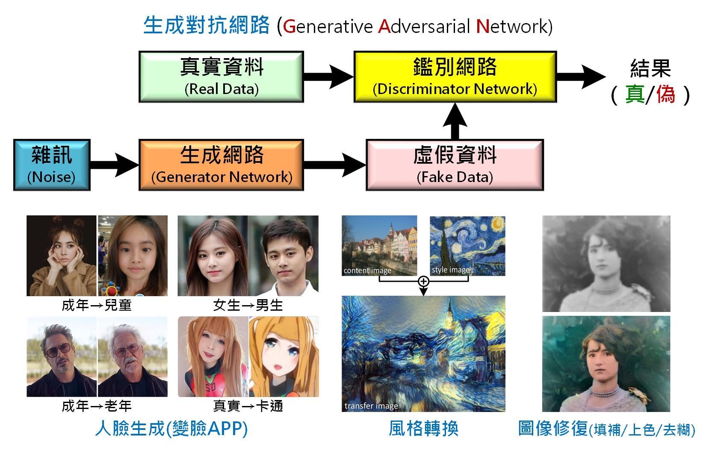

計畫二文獻探討
Table of Contents
1 數位雙生 (Digital Twins)
2020年8月，在經濟部工業局指導下， 資策會集結臺灣數位經濟四大產業協會，共同整合13家智慧內容軟、硬體業者，組成「臺灣數位雙生共創國家隊」，力邀國際間極具影響力的國際大廠Amazon AWS及Microsoft擔任技術協力夥伴，於7日舉辦「臺灣數位雙生共創平臺啟動暨跨界商媒交流會」活動，連結產官界及協會等單位共同觀摩交流，促進我國內容產業數位雙生(Digital Twin)領域跨界發展，我國的數位雙生元年也同時宣告來臨1。
何為數位雙生? 其主要概念為何? 何以此項技術能撼動資訊產業的龍頭與國家部門攜手合作? 其應用領域與未來發展趨勢為何? 以上為本小節主要探討重點。
1.1 何謂「數位雙生」
數位雙生(Digital Twin)之概念最高起源於2002年密西根大學(University of Michigan) 之Michael Grieves教授在其產品生命週期管理(PLM)課程演講中所提出之理想概念，並且於 2014 年在其所撰寫的「Digital Twin: Manufacturing Excellence through Virtual Factory Replication 」白皮書中進行了詳細的解釋2。
Digital twin, 數位雙生，又被譯為「數位雙胞胎」、「數位模擬分身」，簡言之，是一個實體產品的數位化，以便於我們能夠在這個數字化產品上看到實際物理產品可能發生的情況，與此相關的技術包括擴增實境AR和虛擬現實VR3。

Figure 1: 數位雙生運用物理模型、感測器資料更新，整合多種維度的模擬過程，在虛擬空間中完成映射，進而更能確實反應出實體物件的全生命週期
科普一點解釋，數位分身指一個實體產品的數位虛擬分身，也就是每個產品均由兩個系統組成，一個為始終存在之實體系統，另一個則為包含所有實體系統資訊之虛擬系統(分身系統)。透過真實世界的實體系統蒐集資料，提供給軟體世界中的虛擬分身，企業就可根據數據進行分析、預測，甚至可以在數位環境下進行各種情境的模擬與測試，可透過預防方式介入，以防患未然2。
若從實際建置的角度來為數位雙生做更明確的定義，則我們可以說：「數位雙生」就是藉由真實物體的及時數據(照片、數值)，打造的 3D 模型。完整的數位雙生建置過程須包含4：
- 一個真實物體。關於其運作或使用感測器蒐集其周邊活動的的及時數據。
- 一個真實物體的 3D 模型。
- 從真實物體到 3D 模型的即時數據傳送。
- 一個基於軟體的操作過程，根據收到的即時數據，使 3D 模型的視覺表現與真實物體保持一致。
數位雙生的概念出現已久，為什麼在近年逐漸成為顯學？主要是如物聯網、大數據分析、人工智慧、雲端運算等各個技術與能力逐漸成熟，由於在蒐集資料、運算模擬的可行性變高，因而開始被產業接受且漸漸流行5。
1.2 「數位雙生」四要素
物理世界的設備、產線是摸得著，但不可諱言，在真實世界裡，產品在生產過程的加工、組裝等程序上，難免稍有誤差、公差，而後續產品被使用磨耗、失真、維修的狀態，更充滿不可預測性，因此要讓真實產品與數位模型保持一致，無疑難上加難，這也使得所有在數位模型上執行的模擬分析，不見得具備有效性。反觀Digital Twin，則充分運用物理模型、感測器資料更新，輔以歷史運行數據，並整合多種維度的模擬過程，在虛擬空間中完成映射，進而更能確實反應出實體物件的全生命週期歷程3。
數位雙生概念包含四個關鍵要素(圖2)，分別為真實空間中的實體產品、虛擬空間中的虛擬產品、從真實空間到虛擬空間的數據傳輸，以及從虛擬空間反映真實空間的資訊和流程(如在研發和生產階段，虛擬空間可以產生樣品和產品的生產；在營運階段，虛擬空間可以反映和預測真實產品的運作狀態)2。

Figure 2: 數位雙生四關鍵要素(資料來源：產科國際所)
而從圖2也能看出，發展數位雙生技術需要大量的資料收集、整合，而為了讓數位雙生可以查詢現實世界實體系統狀態，並在狀況產生變化時提高回應的能力，以及即時推播通知，數位雙生需結合如機器學習(Machine Learning)、人工智慧(AI)等技術進行資料分析，並利用儀表板以視覺化方式呈現，最後也能結合資料分析平台來發展具備模擬情境、預測功能之混合模型(Hybrid model)，以提供見解(Insight)或建議，並提供決策制定方向2。
1.3 「數位雙生」的目標
數位孿生的主要目標有二：降低成本、提升效率。若由研發、製造、上市、服務等面向分析，數位雙生的目標如下6：
縮短產品開發週期與成本
透過數位雙生，我們得以在虛擬世界進行模擬，減少實物測試 (原型製作Prototyping）的次數，進而在品質保持的同時，降低成本、縮短開發時間，更有助於少量多樣的生產模式。
降低維護成本，提升服務品質
成功生產實物後，我們可以透過資料回傳，建立新的數位雙生，使用者得以在虛擬環境下即時監測實物，進而降低維護成本；廠商也能透過數位雙生，蒐集使用者的使用問題，提升售後服務的品質。
提升產品與企業價值
當我們將數位雙生應用於整條產品生命週期上，我們便能讓這些數據具有連續性，串連研發至服務的資料，因而能從各方面提升產品的品質與價值，例如：讓研發與製造部門更了解彼此狀況，解決理想與實務之間的問題；研發部門能取得實際使用數據，挖掘使用者使用需求，進而提升產品價值等等。
與物聯網 IoT、AI 機器學習、雲端運算、大數據分析、5G 結合產生綜效
隨著蒐集資料、運算模擬的技術越發進步─透過物聯網、機聯網蒐集大量數據，雲端運算、5G 加快數據傳輸速度，大數據分析和機器學習預測和反應未來，數位雙生的效益與價值更得以實現與強化。
1.4 「數位雙生」應用領域
近年來數位雙生（Digital Twin）的熱度不斷成長，2017～2019連續三年被Gartner納入年度十大策略科技趨勢，2020年則融入其他趨勢中；美國工業大廠奇異（GE）宣稱，2019年間運用數位雙生，幫助製造業客戶節省約1.9億美元；MarketsandMarkets則預估，全球數位雙生市場將從2019年的38億美元，2025年成長至358億美元，複合年均成長率達45.4%7。
資策會產業情報研究所（MIC）產業分析師柳育林指出，數位雙生的基本概念，是運用、結合IoT、AI、AR／VR等多種智慧科技，透過數據蒐集與模擬分析，對實體人事物進行數位化映射，作為各個應用領域的解決方案，可帶來改善決策等效益。除了較受關注的製造、工程產業以外，數位雙生也可應用在休閒娛樂、零售商務等其他領域7。以下為數位雙生於各領域典型應用之範例簡介：

Figure 3: 數位雙生應用型態與領域代表業者(資料來源：MIC，2020年6月 )
航太業
航太產業為數位雙生最早應用的領域，基於該產業在安全性上的高度要求，因此業者已利用數位雙生技術透過虛擬情境的模擬測試，提早因應或規避各種危險、提高飛航安全2。
美國航空太空總署 (NASA) 於2011年便提出此應用概念，希望透過數位雙生模擬飛機與太空船的運作，並達到主要三個目的：提高任務成功率、延長使用壽命和降低維護成本6。美國國防部則將數位雙生技術應用於航空航太飛行器的安全維護與保障。首先在數位空間建立真實飛機的模型，並通過傳感器實現與飛機真實狀態完全同步，每次飛行後，根據結構現有情況和過往載荷，即時分析評估是否需要維修，能否承受下次的任務載荷等3。
美國空軍研究實驗室（AFRL）2013年發布的Spiral 1計劃也是數位雙生的應用，該AFRL與通用電氣（GE）和Northrop 簽訂了2000萬美元的協議以開展此項工作。計劃以現有美國空軍裝備F15為測試台，集成現有最先進的技術，與當前具有的實際能力為測試基準，從而標識出虛擬實體還存在的差距。此計畫的最新結果就是設計出了最新版的F15 2040c ，最令人訝異的是 F15第一版是在40年前的1970年代，至今仍然日新月異，比昂貴的F35、 F22更好用3。
通用電氣子公司通用數位（GE Digital）在2019年協助8,000組客戶資產（設備）引入了數位雙生系統，並替客戶節省了1.87億美元（約新台幣56.2億元）的營運成本，這些設備包括飛機引擎，電廠渦輪，以及一般製造業流水線的包裝機等8，目前歐美航空都已紛紛投入此技術。
航運業
歐洲最大的港口鹿特丹港，則利用IBM Watson物聯網技術打造了一個數位雙生的「虛擬港」，在碼頭設施、港口水域大幅度佈署感測器、感測浮標、IoT智慧貨櫃、「數位海豚」等，持續偵測潮差、濕度、海流和運輸狀況等。管理室對於港口狀況的全控，使惡劣海象下的船對船（Ship to Ship）貨物轉運成為可能，大幅降低了營運成本8。
鹿特丹港每年約有4億6100萬噸貨物、14萬艘貨船進出。鹿特丹港智慧基礎架構IoT業務顧問Vincent Campfens坦言，過去大多仰賴靠傳統的無線電和雷達，來引導這麼多的船隻入港，但這些曾是最新的技術，已經趕不上日益增長的需求，因此，鹿特丹港需要數位轉型。鹿特丹港的目標是在2025年實現「港內航運連網」（connected shipping）。就像無人駕駛車一樣，讓入港船隻可以自動航行在港內水道，不需像過去那樣得領航船和引水人的指揮，才能入港，停泊船隻可以彼此能連網溝通，來避免互撞。為了實現這個目標，鹿特丹預計完成的多項數位轉型計畫:
建立數位分身（Digital Twin）為連網航運做準備
Vincent Campfens指出，港方借助IBM的IoT技術來建立鹿特丹港的數位分身，希望能準確地涵蓋鹿特丹港的所有資料來源，包括港口船隻動態、基礎設施、天氣、地理和水深資料等。數位分身的資料也可用來模擬各種可能的情境，讓相關人員了解如何更有效率地安排船務。因為鹿特丹港每年有十幾萬艘船隻進出，光是安排停泊位置，就得花上幾個小時；但數位分身能讓港務人員同時檢視各方資訊來考慮船隻的停泊，Vincent Campfens估計，每天可以減少8萬美元維運費用，也可以讓船隻少等一小時。
水文及天氣預測
除了用來建立數位分身，鹿特丹港也開始結合IoT、AI和第三方的智慧天氣資料（smart weather data），如，來量測各種關鍵統計數據，例如預設可用的泊位數。簡單來說，準確的水文和天候資料，可以幫助船公司決定入港的最佳時間。IBM旗下天氣公司提供準確的天氣資料，這些資料，如氣溫、風速、（相對）濕度、水位和潮汐潮流等資料，能讓港務人員更精準地預測每一天的能見度，來計算船隻離港，全港淨空船隻的程度。此外，透過海水和風速和風向的預測，港方也能判定船隻是否能順利入港。
船型3D列印
另外，鹿特丹港和30家合作伙伴聯手，成立了一間3D列印實驗室來進行研發，稱為RAMLAB（Rotterdam Additive Manufacturing LAB）。這間3D列印實驗室可以為海港和船公司用更便宜的成本，打造工業用船舶零件，這也是這個領域的第一間3D列印實驗室。甚至利用了IBM認知IoT技術，以機器手臂，逐層疊銲出高品質的金屬螺旋槳等。一般來說，傳統製造某個船舶零件得花上6到8個禮拜，但3D列印實驗室能在200個小時內完成，可以節省許多時間，讓零件製造更快速。
數位海豚（Digital Dolphins）
最後一項鹿特丹港的IoT應用是數位海豚計畫。什麼是數位海豚？並不是要打造出一支機器海豚，而是結合智慧化的碼頭駁岸，和內建感測器的浮標，來協助船與船之間的貨物轉移，過程中還能按時間序列蒐集下船隻狀態和周遭環境。這些數位海豚（浮標），將可以讓港務人員更了解靠泊碼頭的狀態和使用情況，對周遭水域和天氣狀況也有更多認識。
智慧工廠
數位雙生除了簡化並加速調試過程，數位模擬還有助製造商進行虛擬測試。但透過CAD模型，製造商可以在機器仍在建造時，透過虛擬測試，避免產品與機器在製造出來後產生嚴重問題。虛擬測試的經驗加上模擬物理的知識，原本的電腦繪圖技術也可以基於這些來進行優化，在虛擬環境下，對機器進行修正，由於測試僅是虛擬的，製造商甚至可以嘗試對產品進行更大膽的研究與實驗，來得到更多數據與經驗。這樣的做法可以幫助製造商節省開銷，藉由多次的機器虛擬測試來確保機器產出的品質，同時也可以嘗試創造出新的商業模式，下一步就是要讓終端消費者的生活能越簡單容易越好。不僅如此，數位雙生降低虛擬調試時間，大幅節省成本3。
西門子的智慧工廠舉世聞名，除了智慧生產外，利用數位雙生改造製造工程，才是優化生產的關鍵。西門子在機械設備等地方布建感測器蒐集數據，結合系統數據串連至西門子開發的MindSphere平台(圖4)，創建分身模擬生產情境並並進行數據分析，透過視覺化監控、模擬產品開發與生產運作等動態調適，幫助工廠提升生產效率。柳育林舉例，西門子利用數位雙生技術，幫助國際塗料製造商Dulux澳洲廠，大幅降低製造模型成本，最低批量從5,000升降至100升、處理循環快8倍7。
Figure 4: 西門子利用數位雙生在工廠打造製程分身(資料來源：Siemens，MIC整理，2020年6月 )
又如電動車大廠特斯拉(Tesla)，特斯拉每賣出一輛汽車，便會在其系統建立一數位雙生。透過搜集各車主、車輛的使用問題，他們能夠隨時調整更新車輛系統，除了能提供車主更好的體驗，更能將搜集到的使用需求與習慣，應用於新車輛的研發上6。
無論對機器製造商或是終端使用者來說，數位模擬技術助益良多，同時也讓雙方都可瞭解到該如何得到數據，以及如何將數據正確使用在正確的地方，如此一來可以透過虛擬測試來改變及調試機械工具，讓工具在生產出來後能夠確保品質與效率，如此便不需要實際透過機器測試，減少時間與成本。也能降低機器發生停機意外的機率3。
智慧城市
最常使用也有最突出用途的「數位雙生」案例就是打造虛擬城市，也就是使用「數位雙生」來監控城市基礎設施和進行未來規劃。「數位雙生」可協助城市的管理者們監控從交通設施運作到橋樑維護的各個方面，甚至能夠使用預測數據模擬洪水，以進行防災規劃8。

Figure 5: 虛擬新加坡 Virtual Singapore ( Source: 3ds.com )
2014年，新加坡政府與達梭系統 (Dassault Systèmes) 合作開發新加坡的數位孿生「虛擬新加坡」(Virtual Singapore)(圖5)，讓用戶得以 3D 的方式檢視整個城市隨著人口成長、新建設和其他主要活動的發展與成長。新加坡的政府與企業也能透過這個數位孿生，針對各項建設與專案，去實驗、研發、規劃與決策6。
真人數位雙生
數位雙生技術同樣可以用在休閒娛樂產業上，美國新創DNABlock的聯合創辦人Christine Marzano，兼具演員、模特身分，目前致力發展名人分身展演等創新事業，公司觸角已延伸至區塊鏈名人分身對戰遊戲，角色包括McAfee創辦人等。DNABlock利用多種角度攝影捕捉量測名人，同時間拍攝多張不同角度照片，匯集名人影像數據，並運用AI等技術創建分身，融入特定特質在名人分身上，再透過Replickant動畫引擎添加特定特質。由於名人分身這種擬真展演的模式，可以突破時間與地理空間的限制，適合應用在跨地展演走秀7。

Figure 6: 名模Christine Marzano全心投入自己的數位模特兒事業（Source: BBC）
數位雙生應用於時尚業的產物即所謂的「數位走秀」，即，設計師得透過模特兒的數位雙生，在剪裁出衣服前，預先在虛擬環境裡模擬衣服穿在模特兒身上、在伸展台展示的模樣。以知名名模 Christine Marzano 為例，他雖已全心投入自己的數位模特兒事業，其數位雙生Christine 2.0 仍受時尚品牌雇用，試穿時尚衣服，以她的台步在伸展台上走秀6。
數位雙生在娛樂產業的另一應用典範為Wave，線上虛擬娛樂平台Wave，則是把AR技術應用在打造獨一無二的虛擬音樂會，將藝術家轉換為分身並投射到虛擬舞台上，搭配每個藝術家獨特風格的表演方式，打造令人驚嘆的視覺效果。Wave利用感測套裝和體感手套，捕捉身體、手部等動作數據，即時匯入Wave平台，創建虛擬化身投射虛擬舞台，可融合大量絢麗的影音效果，觀眾可用VR裝置在Wave Club觀看互動，亦可於FB、YouTube等平台觀看7。
迄今為止，Wave已經和超過20位藝術家合作舉辦音樂會，去年和電子小提琴家Lindsey Stirling的VR音樂會，吸引全球各地40萬觀眾欣賞，Wave使用XSens 3D和Manus VR Gloves捕捉Lindsey Stirling所有動作和舞蹈，並實時轉換為VR，為觀眾提供更高的臨場感。根據Wave官方表示，因應疫情已湧進更多的音樂家分身表演需求7。
醫療應用
新冠病毒肆虐，全球許多機構開始思考以「數位雙生」對抗疫情的解方。而在IoT逐漸成熟的未來，「數位雙生」帶來虛擬與實體板塊的移動，也將為各產業領域帶來衝擊。2020年4月初，數位雙生（Digital Twin）技術在疫情嚴重的倫敦派上了用場8。英國IoT系統商IOTICS於2020年4月啟動Critical Care專案，該專案採用數位雙笁技術，並結合來自各地醫院設備的IoT數據，目前已經創建出醫院數位雙生平台，可顯示出倫敦市內重症監護病床數、維生系統等關鍵醫療資源的即時使用情況，並鼓勵地方當局和醫院輸入其基本病床可用性數據，以提供英國國民保健署(NHS)決策參考。該平台除可提供重症監護病床數目即時監控，民眾也可根據床位使用情況做出決策，如床數不夠也能選擇進一步的自我隔離，醫院和工作人員也可以優化資源，在不同醫院之間進行協調，並引導患者至有閒置的病床和呼吸器醫院等。該平台也可以快速整合相關數據來源，以保持擴展和建構醫院全貌，每家醫院的數位雙生都可以即時更新數據與分析。未來該平台將陸續增加其他數據來源，例如COVID-19測試結果、呼吸器利用率和患者管理等資訊，以提供政府更有效的決策參考依據2。
同樣是為了因應COVID-19疫情，美國雲端平台業者OnScale與生物力學模擬技術提供商LEXMA Technology合作，在2020年3月啟動Project BreathEasy計畫，利用匿名肺炎患者的多組核磁共振（CT）照片，建構出病人肺部的數位雙生(如圖7)。OnScale的作法是匯集患者斷層掃描、X光，以及數千種肺部氣體與血液流動資料至平台，創建分身模擬肺部情境，持續量測模擬訓練AI，以快速預測通氣和插管過程中的氧氣與血流量，並決定有限的呼吸器設備應該提供給哪位患者，優化呼吸器的運用率，幫助醫生做出更好的治療決策。OnScale表示，由於COVID-19的病例數遠超過可用呼吸器資源10倍以上，藉由數位雙生技術至少可提高呼吸器10%運用率，挽救更多病患的生命，這個計畫目前正在進行驗證測試中7, 8。

Figure 7: 新冠肺炎的計畫 Project BreathEasy，重建出肺炎患者肺部的「數位雙生」(圖片來源：Ian Campbell)
在運動健身層面，義大利一家健身、健康和康復系統開發商TecnoBody，利用Digital Twin打造運動數位雙生，已有數十家健身運動及護理機構導入TecnoBody。TecnoBody所研發的產品「D-Wall」(圖8)，是結合智慧顯示器+體感地墊，只要匯入身體資料，結合3D鏡頭掃描與體感地墊感測數據，就可以快速同步建立3D模型，創建分身同步運動情境，反饋即時資訊到鏡面，識別關節與分析各種動作，再藉由遊戲化、視覺化動作引導評估，量身客製實現運動目標，或是促進復健效果。
Figure 8: TecnoBody旗下的D-WALL，可為每個動作均提供即時的生物反饋(圖片來源：TecnoBody)
零售商務
總部位於英國倫敦的Metail，替服裝零售商提供虛擬試衣間服務，也就是為消費者打造數位雙生，消費者只要上傳兩張自己的照片，短短幾分鐘內就能創建自己的3D逼真照片模型。Metail的創新方案同時解決兩種需求，對於零售商提供經濟實惠且高效的電子商務模型攝影過程；消費者可以從線上自由的嘗試衣服，就好像真的穿上商品後拍照一樣。

Figure 9: Metail的虛擬試衣間(資料來源：Metail，MIC整理，2020年6月)
透過Metail，網購用戶可直接上傳兩張照片，或輸入身高、體重、三圍等數據，Metail匯集消費者體態資料後，創建分身模擬穿搭情境，透過MeModel建立個人化模型(如圖8)，進行穿搭同時學習用戶偏好，透過量身穿搭與推薦服飾，幫助零售業者提升銷售與降低退貨率。Metail目前的合作品牌客戶包括ASOS、Tesco、House of Holland等，宣稱已取得超過72億筆數據、幫助網路服飾業者銷售成長22%。
1.5 小結
關於數位雙生的未來，Research And Markets的預測顯示，在2025年89%的IoT設備都將含括某種數位雙生的形式，而數位雙生更將在2027年，成為IoT應用的標準功能與規格。事實上，數位雙生作為工業4.0虛實融合系統（Cyber Physical System,CPS）的一環，也就是在物理空間內的所有實體（如設備）狀態，都能在虛擬空間（如數位控制台）得到即時的一對一對照，而在虛擬空間中的操作，也能夠及時反饋到物理空間中，進而讓生產效率達到即時的最佳化8。
「數位雙生」必將成為許多不同行業的關鍵 IT 工具。根據 Engineering.com 的說法，「數位雙生」是與人工智能（AI）和機器學習（ML）並列的十大戰略性技術趨勢之一。畢竟未來的一個關鍵領域就是供應鏈，因為製造流程要依靠送達的零件來實現「準時製造」。供應鏈的「數位雙生」由許多物品和倉庫組成，可追蹤庫存和潛在交付時間。這樣的「數位雙生」能夠模擬和評估許多不同供應鏈方案的績效，為經理們提供做出優化製造過程的決策的手段。隨著採用率持續增長，有望在包括城市規劃、產品開發和工廠模擬在內的各個領域看到更多「數位雙生」的應用4。I
2 人工智慧 (AI)
人工智慧是研究開發用於模擬、延伸和擴展人類智能的理論、方法、技術及應用系統的一門科學。由於AI是一個普及科技技術（general technology），可以被應用於各個領域，驅動技術、產品、產業、業態、商業模式的演化，並將使經濟、產業結構發生重大變革。麥肯錫全球研究院認為，人工智慧正在促進人類社會發生轉變，這種轉變「將比工業革命發生的速度快10倍，規模大300倍，影響幾乎大3,000倍」。現階段人工智慧技術與應用正在快速演進，例如將人工智慧應用於影像辨識與語音識別，帶動了新產品與新服務，聊天機器人成為產品行銷、線上客服、收取訂單等服務的幫手，人臉辨識與影像辨識讓門禁管理、停車管理都變得更便利9。
2.1 什麼是人工智慧
「人工智慧（Artificial Intelligence, AI）」一詞，正式出現於1956年的達特茅斯夏季人工智慧研究計畫會議（Dartmouth Summer Research Project on Artificial Intelligence）中，在此之前，「能思考的機器」尚僅存在於小說或電影等人類的美麗幻想中。曾幾何時，人工智慧似乎已無所不在，不論是你口袋的手機、 你乘坐的汽車、你常逛的購物網站給你的推蔫商品、你的社群軟體、你電腦裡安裝的防毒軟體…，背後都有人工智慧默默的付出，而在某些領域，人工智慧的效能甚至遠遠於人類。諸如10：
- 影像辨識：如Facebook用來將使用者自動標記在照片中的「人臉辨識」、停車場或收費站的「車牌辨識」、「自動駕駛系統車」、無人商店的自助結帳，或是醫學影像診斷分析系統。
- 自然語言處理：顧名思義，自然語言處理是要讓電腦能理解人類語言，例如藉由分析詞意以及詞句間的關係，可以讓我們在網路搜尋（例如：使用Google搜尋）時能夠找到與搜尋的字詞（關鍵詞）最相關的資料，又如機器翻譯、詐騙郵件偵測、Google的搜尋建議更正，抑或是那些用來分析社群媒體、娛樂產業、觀察網路網民活動的輿情分析系統等。
- 語音識別：語音辨識技術為我們帶來最大的方便即是省去動手的麻煩，典型的應用就如我們常用手機語音助理（例如：Siri語音助理）所提供語音撥號、語音輸入、語音問答等功能，又如家用電視機的語音操控介面，而Google於2018年5月在Google I/O大會首次向世人展示的Google Duplex則更進一步能透過語音助理撥電話與餐廳人員對話進而完成訂位工作。
- 醫療照護：人工智慧在醫療照護方面的應用從基本的協助醫生進行醫療數據分析、疾病診斷，到病患生理數據即時監控、一般疾病諮詢，一路延伸至家庭或是老人照護陪伴等。
許多領域對於人工智慧的定義與見解都不大相同，但核心層面的定義是一樣的。 AI的意思是用程式的方式達到人類需要運用智慧才能完成的事情。傳統的程式是用一系列的指令以及規範來讓整個程式運作，例如一個計算機，他的輸入如數字、以及加減乘除等的運算子，都是被規範好的，而這導致這個程式無法處理沒有被定義的新變數。所以若我們想要此程式處理其他問題，工程師就必須更新指令以處理新的變數11。
但在實務面上，工程師以及電腦是不可能將整個世界的變數放進一個程式中的，這就是為何在解決真實世界的問題時，新的方式必須被發展出來。 在所有AI技術中，最被廣為應用的即是機器學習(Machine Learning)，不僅是因為其較低的技術與數據成本，同時更是因為機器學習部署的價值體現較快，而使得組織更傾向於發展該技術。 而在在眾多機器學習的實作技術中，又以深度學習(Deep Learning)為目前的主流(如圖: 10)11。
Figure 10: 人工智慧、機器學習與深度學習
然而，不論是從 1942 年的ABC或是 1944 年的MarK I，電腦的問世都已過去半個世紀了，為何到 2010 年後，人工智慧才成為熱門話題？此問題要回溯人工智慧的發展歷史。
2.2 人工智慧的發展起伏
綜觀人工智慧的發展歷史，我們可大致將其歸納以下的階段(圖11)12, 13, 14：
Figure 11: 人工智慧歷史線條圖
誕生｜1950-1956
1950年，Marvin Minsky 的大四學生，建造第一台神經網路計算機；且當年被稱為「計算機之父」的 Alan Turing也提出—圖靈測試，他認為一台機器若能夠跟人對話，而不被人識出他的機器身份，那這個機器就具備智慧。1956年，達特茅斯大學的學術研討會，不同領域的科學家正式確立「人工智慧」這術語。由當時的數學助教、現任斯坦福大學教授 John MeCarthy 聯合哈佛大學、麻省理工學院、IBM研究中心負責人、貝爾實驗室信息部數學研究員…等人共同發起。
這場會議，讓 John MeCarthy被稱為人工智慧之父，這個具有歷史意義的會議，標記了人工智慧成為一門新興學科。之後，John MeCarthy 與 Marvin Minsky 共同創建第一座人工智慧研究組織「MIT AI LAB」，美國也開始有多個人工智慧研究組織。
第一次發展｜1956-1974
1956年達特茅斯大學的研討會後，在之後的十多年，大發明的時代來臨，人工智慧的研究在機器學習、模型識別、問題解決、專家系統及人工智慧語言…等各方面都贏得許多成就。計算機被廣泛應用在數學、自然語言領域，解決代數、幾何、英語…等問題。當時的許多學者甚至認為，未來二十年內，機器可以完成人能做的全部事情。
此階段的人工智慧主要成就如下：
- 感知機 (深度學習的雛形) 被提出
- 用機器證明「數學原理」定義，也提出歸結原理
- 發展出模型識別程序，並編製可分辨積木構造的程序
- 編制通用的問題解決程序 (General Problem Solver，GPS)
- 研製成功專家系統 DENDRAL
- 研發人工智慧語言 (List Processing，LISP)
- 感知機 (深度學習的雛形) 被提出
第二次瓶頸｜1987-1993
1987年，命運又再次碾壓人工智慧，由於AI專家系統的應用領域過於限縮，且要更新及維護成本過高，只維持了7年，就宣告結束。
同期，美國的Apple和IBM生產的桌上型電腦性能都超過當時的通用計算機，加上「個人電腦」的理念不斷蔓延，讓人工智慧又再次遇到財務困難。
當時的主要挑戰包括:
- 桌上型電腦和個人電腦的理念帶來衝擊
- 企業對AI的神話和冷落，讓AI化為泡沫
- 無法突破計算機性能的瓶頸
- 缺乏處理龐大數據的訓練機器
- 桌上型電腦和個人電腦的理念帶來衝擊
第三次發展｜1993-2021
在摩爾定律下，計算機性能不斷突破。有科學家想到，無法讓機器思考、也無法餵給它所有知識，那能不能退而求其次，把看到的現象告訴它就好？於是科學家僅告訴機器如何識字，然後餵給它大量的現象，讓機器自己判斷，於是神奇的事發生了，機器找出了自己的規則、然後學習，這就是現代機器學習的開端，讓人工智慧有了大躍進，而且不斷進化中。
至此，人工智慧開始大放異彩，此階段幾項重要里程碑包含：
- 1990年代中期，神經網絡技術的發展，也讓人們對AI開始有客觀、理性的認知，慢慢進入平穩發展時期。
- 1997年，IBM的計算機系統Deep Blue戰勝國際象棋世界冠軍Garry Kasparov，這也成為重要的里程碑。
- 2005年，Stanford開發的機器人在沙漠上自動行駛210公里，贏得DARPA挑戰大賽頭獎。
- 2006年，Geoffrey Hinton提出多層神經網絡的深度學習算法、Eric Schmidt在搜索引擎大會提出「雲端計算」概念。
- 2007年，Adam Cheyer創立Siri，Apple公司在2010年完成收購。
- 2010年，Sebastian Thrun 領導的Google無人駕駛車曝光，創下了超過16萬公里無事故紀錄。
- 2011年，IBM Waston參加智力遊戲《危險邊緣》，打敗最高獎金得主Brad Rutter和連勝紀錄保持者Ken Jennings。Nest Lab發表第一代智慧恆溫器Nest，它能了解用戶的習慣，並自動調節溫度。
- 2012年，Google發布個人助理Google Now。
- 2013年，深度學習在語音和視覺識別率獲得突破性進展。
- Facebook創始人Mark Zuckerberg參加的神經信息處理系統(NIPS)技術會議，讓人工智慧從學術研究走向商業領域。
- 2014年，微軟亞洲研究院發佈人工智慧聊天機器人和語音助手Cortana。
- 2015年，Facebook發布一款基於文本的人工智慧助理M。
- 2016年，Google公司的人工智慧程序「AlphaGO」，與韓國棋手李世乭在圍棋上正面交鋒。AlphaGo 所使用的深度學習技術引起全球關注。
- 2017年，AlphaGo在中國烏鎮圍棋峰會，挑戰排名世界第一的圍棋冠軍柯潔，以3比0獲勝。
- iPhone X 配備前置3D 感應攝像頭 (TrueDepth)，臉部識別點達到3萬個，具備人臉識別、解鎖和支付等功能；配備的A11 Bionic神經引擎使用雙核設計，每秒可達到運算6千億次。
- 1990年代中期，神經網絡技術的發展，也讓人們對AI開始有客觀、理性的認知，慢慢進入平穩發展時期。
2.3 人工智慧、大數據、機器學習、深度學習之間的關聯
提及人工智慧，似乎免不了會有幾個新興名詞相伴出現，如大數據、機器學習、深度學習等，這些名詞在概念上或有關連、或有交集，簡述如下。
- 機器學習，指的是可以從資料中歸納規則的方法，是第三波人工智慧發展的代表技術；而在眾多機器學習演算法中，深度學習（多層次類神經網路的代稱）是近幾年成長最快、表現最亮眼的技術14。
- 大數據是資料來源，機器學習是資料的分析方法，從資料中萃取出複雜的規則，讓電腦根據這些規則展現出擬似人類智慧的行為，就是「現在」的人工智慧14。
- 在第二波人工智慧發展的專家系統，需要由專家定義規則；到了第三波人工智慧發展的機器學習，只需要專家定義特徵，電腦自己會找規則。而深度學習的出現，將定義規則、定義特徵的工作都交給了電腦，而且做得比人類更好。深度學習，只要懂得定義問題，有足夠質量的資料、有轉化為模型的能力，幾乎可以應用在任何決策問題上，雖然不見得都有準確的預測能力。像是Google的語音辨識、文字翻譯、照片分類、自動回信、垃圾郵件判斷，現在都是運用深度學習來做的14。
2.4 人工智慧的類型
- Narrow AI
難度最低的、也是發展相對成熟的，是「狹義人工智慧」，又稱「弱人工智慧(weak AI)」，指人工智慧系統能在單一領域執行單項任務，如電腦視覺（Computer Vision）識別、語音識別和語言繙譯等；而這些人工智慧系統已滲透我們的日常生活，例如Facebook的人臉辨試、Google的中英文翻譯、Pinterest的影像自動分類、電子商務服務的商用聊天機器人（Chatbot）進行個性化營銷等等，AI在這類單一領域的都能有超越人力的表現。
- Broad AI
然而，在實際情況中，「狹義AI」仍然存在很多問題，我們還需要有更廣泛功能的人工智慧技術，才能有效應用 AI，解決現實世界各種複雜問題；例如需要人工智慧系統可在欠缺大量數據的情況下，仍能有效學習。再者，人工智慧系統在提供高可靠和高準確度模型之外，還需要模型產生出來的結果是公平的、值得信賴的，以及可以解釋的。它們不僅需要能將知識和推理結合起來，更要具備自學能力，能不斷的提高性能和實現更複雜的功能。
這也是「廣義AI」的目標：可以執行跨領域、多任務的工作。現時許多世界領先的商業公司和學術機構，正在推動拓展此類研究，相信「廣義AI」系統，應可在短期內普及。
- General AI
又稱為「強人工智慧(Strong AI)」，強人工智慧是人工智慧研究的主要目標之一，同時也是科幻小說和未來學家所討論的主要議題，期望電腦能執行所有人類的工作，除了具有認知能力之外，還能夠推理、自學、溝通甚至擁有自我意識，並綜合這些能力來面對未知的情境，可以因應不同狀況調整自身能力來實踐特定目標。
2.5 人工智慧於各領域的應用
人工智慧的應用都在各個產業中具有著龐大的潛力，而隨著轉型的迫切性提高，我們也看到人工智慧更為廣泛的被應用到各個領域中，像是工業4.0、智慧城市、新零售、以及智能家居等等，這些應用的背後最重要的技術之一即是人工智慧。不論是哪個產業中的應用，我們可以將AI在各產業的應用類型區分為以下幾類11:
時間序列與預測分析
時間序列數據為根據時間的前後，來標記數值的一種數據模式。像是銷售部門的歷史銷售數據、每一天的氣溫、或是一間飯店每晚的入住率等等。 而所謂的預測分析，則是一個利用資料採礦以及統計模型，去分析前面所提的這些時間序列數據(歷史數據)，並從中抓出某些特定的模式以預測未來。
AI在這個領域當中能提供價值的有幾個層面:
- 擁有的數據量非常龐大時，那麼使用AI的手段去做預測分析不僅更加符合經濟效益，甚至在大部分的情況下，正確率也相較於統計模型來的更高。例如網頁的旅程分析，假設現在業者想要通過用戶的旅程數據建立一個推薦系統，在消費者即將結帳時推薦消費者其他他可能也會想要購買的商品。在這個情況下，要通過樣本來建立統計模型就顯得不實際了。 亞馬遜資料科學還非常早期時就應用了機器學習開發了平台上的推薦引擎，並將之整合至顧客旅程的每一個階段，在導入的隔一年就創下了29%的營收成長。
- 第二個適合時間序列的領域為數據非常複雜時，也就是說當數據的獨立變數非常龐大時，那麼使用AI也會相較於傳統的統計模型來的更能解決問題，例如許多不同種類的IoT數據整合，ERP的供應鏈數據等。這種類型的工作之所以更適合AI是因為業者能夠更快的建立模型並測試，而傳統的統計模型卻要花上更久的時間才能建立洞見。
- 擁有的數據量非常龐大時，那麼使用AI的手段去做預測分析不僅更加符合經濟效益，甚至在大部分的情況下，正確率也相較於統計模型來的更高。例如網頁的旅程分析，假設現在業者想要通過用戶的旅程數據建立一個推薦系統，在消費者即將結帳時推薦消費者其他他可能也會想要購買的商品。在這個情況下，要通過樣本來建立統計模型就顯得不實際了。 亞馬遜資料科學還非常早期時就應用了機器學習開發了平台上的推薦引擎，並將之整合至顧客旅程的每一個階段，在導入的隔一年就創下了29%的營收成長。
圖像處理
圖像處理分成兩個層面，一為圖像辨識，另一個則是圖像生成。由於在圖像生成的領域中，我們尚未看到一個明確的商業應用層面，所以我們會專注於圖像辨識去提AI的應用。 圖像辨識在AI逐漸成熟的這十幾年前，幾乎是不切實際的任務。 想像一個工程師把全世界的圖像的邏輯都輸入進程式當中，那近乎是不可能的。 就連辨識0~9這十個數字，在過去也都是個工程難題。
然而，AI不同於邏輯運算，AI將整個圖片看成二進位的矩陣，也就是所謂的非結構型數據，並通過演算法去處理龐大的資料(也就是圖片)來訓練模型。現在，隨著AI技術的成熟、數據的增長(李飛飛教授所帶領建立的ImageNet圖庫)、以及運算力以及運算方法再進一步的突破，圖像辨識的技術在我們的生活當中到處都是了。
音訊處理
Audio AI，另一個高速發展中的人工智慧前沿技術，雖然整體市場規模於2018年時僅有六千多萬美金，然而持續到2025，其市場將維持著75.8%的CAGR，並在健康醫療、智慧家庭、安全與監管、以及製造業等產業創造龐大價值。Kaggle上就有許多於音訊處理上有趣的AI專案，譬如通過鳥的聲音來判斷種類、通過機器的聲音來評估是否即將故障、通過客戶的聲音來判斷情緒等等。而隨著越來越多的設備將被賦予聲音識別能力（預計2023年將達到6億台），音訊AI於各個產業的發展，通過人類器官所發出的聲音來識別身體狀況、機器設備的預測性修復、智慧家庭設備的異常偵測、甚至是能夠產生真實聲音的軟體等等。
自然語言處理
自然語言處理（Natural Language Processing），簡稱NLP，是人工智慧最為主流的一種應用，目的是讓電腦能夠理解、甚至是生成出人類所使用的語言。
早期NLP的執行方法都是透過工程師將一堆規則編程進自然語言處理的程式當中，例如利用文法、詞性、以及單詞的種類等來建立一整個決策樹，也就是一連串的「如果… 那麼…」來幫助當時的程式理解語言。 而隨著運算速度的增加以及機器學習演算法的進步，在幾十年前，我們也開始將許多AI技術，帶進自然語言處理中。
而近期最大的突破為深度學習進步所進一步驅動的BERT模型，也就是「轉譯器的雙向編碼表述」。BERT不同於以往以單向的方式，也就是從左到右或是右到左的去處理字詞，反之，BERT透過雙向的字詞處理以及訓練模型，以更好的理解文本的上下文。 其成績不僅在MultiNLI評估的正確性達到86.7%，, SQuAD v1.1 問答題F1更是達到了93.2，相較於前一代的模型都是大幅的成長。
現在NLP已在各個領域當中都被大規模的採用，保險業者可以使用NLP模型去自動化核保的過程、法律事務所可以利用NLP去處理需要檢閱的龐大資料、消費品公司可以利用NLP驅動的社群監控以更好的掌握消費回饋、同時Google Duo更是利用NLP去生成真人的語音協助用戶訂餐廳等。 有效的應用自然語言處理技術，業者不僅可以通過它去自動化許多業務流程、豐富消費體驗、業者更是能思考如何利用NLP技術的本質，去研發許多創新的商業應用。
動態影像處理
全球有大約七億七千萬個監視器在城市的各個角落監視著市民的一舉一動，而這個數字在2021年會成長到十億。這代表著每分每秒都有龐大的動態影像數據正在產生，而同時，影片正在漸漸地取代文字以及圖片，成為我們吸收資訊的主要媒介。最後，更重要的是，所謂的影片其實是所有數據型態中最接近人類如何感知這個世界的。
不過AI在影像處理的領域中，相較於圖像與文字，是相對的初期。 這主要是因為影像的數據量過大，以及變數太多，而導致演算法難以訓練模型。同時，動態影像處理又有著許多的分支，例如視覺里程計、物件偵測、影片追蹤、以及破壞偵測（判斷影片是否有被改造）等等。而由於動態影像處理是建立於這些技術之上的，若要能夠很好且全面的掌握動態影像處理技術，這些領域的成長都是必須的。
雖然動態影像處理技術是相對的初期，我們仍然可以看到許多成功應用，例如在運動分析中，許多業者就有效的利用了影片分析達到賽場結果的預測、團員價值的衡量、以及運動員優化領域的評估。而在CCTV中，地方政府更是透過影片分析，來更好的掌握市民的一舉一動，以最即時的提供市民協助，例如Real-time crime mapping以及即時需求偵測等。 最後，在零售業中，更是有業者通過分析影片以了解如何更好的優化貨架商品的擺設等。
根據資誠聯合（PWC）發表的《全球人工智慧研究報告》指出，AI對產業潛力影響指數，依序為醫療、汽車、金融服務、運輸、物流、技術、通信、娛樂、零售、能源及製造業等區塊，已經創造出有別傳統的產業經營模式。此外，根據國際知名市調公司CB Insight公布的「2018人工智慧100」報告顯示，AI產業應用已擴散至各種應用情境與領域。全球已有將近超過1,500家的新創公司投入AI的發展。其中幾個最令人矚目的應用包括18：
- 健康照護與醫療應用：從個人的健康助理、線上醫師、醫務管理、影像診斷到臨床研究均有相關應用投入；最值得期待的是，對新藥的開發及新型分子發現等研究，這將對未來生命科學的發展產生非常大的推力。
- 智慧製造：結合物聯網及大數據資料，AI演算法提升廠商在產品瑕疵檢測、良率控制、機器設備故障預防、排除及自主維護等方面萬倍以上的效率；也把原物料的配比最佳化，改善了以往人們用錯誤的實驗，所造成的材料浪費及時間延遲。
- 商業情報分析、市場調查與客戶支援：找出具備潛在價值的訊息，供企業決策參考應用，以尋找商機，包含國際情勢、產業動態、趨勢研判、市場動向等，可運用在預測未來、協助決策、大環境研判、競爭對手動向判斷等。
- 網路安全：一些新創企業開始利用AI技術來協助網路安全防治，針對物聯網、暗網（Dark Webs）進行監控，同時檢測網路上可用的數據及資料、確認可能的威脅與風險。
- 教育與研究應用：在教育上，運用AI技術協助改善教學效率，強化學習效能，透過教學機器人提供針對性、滿足個人需求及程度的教學；在研究上，利用資料探勘及文字處理的技術，對文獻進行分群、自動摘要、萃取重點，並利用電腦全天全時不會疲累的特性，提供即時且熱門的新興科議題供使用者參考。
面對未來全球AI應用新浪潮，目前科技部正推動「AI創新研究中心」專案，以小國大戰略的思維，在AI實踐年，以生技醫療、智慧製造、智慧服務、智慧技術為主題，打造AI創新環境機制，建立AI創新生態圈，以促成國際級AI創新研究中心，使台灣AI將在世界的舞台上占有一席關鍵角色。
2.6 AI 的五大迷思
雖然人工智慧已為許多產業已帶來顯著價值，而且充滿潛力，這同時也讓許多企業趨之若鶩。不論本來談不談、做不做、懂不懂資料科學及大數據的企業，都開始紛紛談論人工智慧。然而許多企業在發展人工智慧應用時，普遍仍會陷入一些迷思及陷阱19。
迷思一：資料等於價值
許多企業以為，蒐集下來的資料本身就具有價值，雖然不懂怎麼用，但也抱著不放，這往往是誤解資料的意涵。事實上，資料必須經過處理、分析及開發才會成為最終產品，最終產品可能只是一份分析報告、一個特定決策的建議。一個好的機器學習模型，或者是改良過的決策流程，理想上是希望能以機器學習達到人機協作，利用企業流程取代人與人工智慧各自的優點，達成更佳且更有效率的決策。
換句話說，資料若沒有經過妥善的「加工處理」和「萃取分析」，本身的價值是尚未被開發與決定的，端看使用它的人識不識貨，有沒有能力將「對的資料」以「對的方式」應用在「對的場景」。例如電信業的通聯紀錄，大家都覺得應該很有價值；它若被一般的行銷公司用，就只能拿來做隨機的電話行銷，但若被治安機關使用，可以拿來破解詐騙集團，對社會的價值截然不同。
另一方面資料品質的好壞，也攸關著後續能否從中產生價值的關鍵。然而，很多公司並不明白這一點，未在資料蒐集機制上投注資源；或只知蒐集資料，從來沒有驗證資料的完整性及正確性，也沒注意過資料之間的斷點，也就是資料集之間是否能連結。
質量俱佳的資料固然重要，但機器學習及電腦硬體的進步，同時也是今日，人工智慧能發展出這麼多新型應用的主因。所以了解資料價值的同時，千萬不要忽略資料彼此連結的價值，以及機器學習技術所帶來的加乘效果。
迷思二：牽涉電腦與資料就是資訊部門的工作
很多公司認為與電腦、資訊、資料相關的工作，就應該由資訊部門負責；甚至連影印機、投影機、碎紙機都歸到他們，換言之，只要能通電的都歸資訊部門管理。其實，分析大數據的電腦設備通常不是重點。相較於資料、人才、具有洞察力的切入點，以及公司內部的跨部門支持，硬體設備只要花錢就能買到，反而是最容易解決的問題。
此外，人工智慧團隊與一般資訊人員的訓練，有非常大的差別。例如資料科學家通常必須具備四大領域的能力，即數學與統計、程式設計與資料庫、領域知識以及溝通與協調等人際能力。而資訊人員的能力需求，通常著重於程式設計與資料庫領域的技能，普遍缺乏進行資料分析及機器學習最需要的數學與統計訓練；再者可能也缺乏領域知識、商業經驗以及人際溝通能力，基本門檻有相當大的差異。
另外，要發展人工智慧不可或缺的資料，在企業裡必定來自四面八方，可能是業務部門、會計部門、生產部門或是倉儲管理部門，當資訊部門要蒐集和分析資料時，勢必需要跨部門的合作，若其他部門都不認為這是他們的工作，不願意提供資料，或者是不願意提供領域知識，資訊部門可能拿不到資料，或是因為缺少指引，無法正確解讀及使用資料。
一家公司如果有心要導入人工智慧，最好的做法必須是由上而下推動，並以跨部門合作為常態，而非把創新的責任全部加諸於資訊部門身上，才能跨越障礙，迎向成功。
迷思三：資料分析就是產出報表
企業常以為資料分析，僅限於分析公司內部資料庫中的結構化資料，這也是為什麼管理資料倉儲的部門，通常直接被賦與資料分析任務的原因。但其實非結構化資料，例如影像、聲音、影片、文字、互動等，也蘊含相當豐富的資訊，只是因為分析非結構化資料的技術門檻較高，經常就被忽略。也因此，很多公司資料分析團隊的產出就是報表、報表及更多的報表，讓主管來解讀，就我來看，這還真是浪費資源的行為。
迷思四：電腦決策不可能贏過人的專業經驗
曾經有某位金融業高層跟我提到，對人工智慧的看法，他認為人工智慧因為沒有領域知識（Domain Know-How），即便再厲害，還是贏不過像他那樣，在業界歷練二十多年的專家。
這個問題的答案，可以從美國知名認知心理學家喬治．米勒（George. A. Miller）在1956年發表的研究〈神奇的數字：7±2〉（The Magical Number Seven, Plus or Minus Two）談起。這篇論文最重要的觀念，就是揭露出人類訊息處理的限制：原來人類大腦記憶的極限，同時只能處理7±2 件事，也就是約五個到九個訊息，若超出這個數量，人類腦袋會自動忽略，無法注意。
換句話說，人類其實在處理和接收訊息時數量相當有限，通常只能注意到「強訊號」，對於許多連結性看似較低，卻可能隱藏資訊的「弱訊號」，我們通常無法掌握。也因此人類習慣的訊息處理模式，就是把資訊簡化再簡化整理成模式（pattern），以幫助記憶或決策。
在某些領域，特別是有龐大歷史資料、情境單純，且判斷規則模糊且複雜的問題，人類專家即便有幾十年經驗，也難與人工智慧匹敵。因此，還是要清楚認知人類的優勢，以及人工智慧的優勢各在哪裡，再來討論下一步。而不是一味地認為，雖然人工智慧在別的領域表現很好，但我的領域比較特別，我的多年經驗絕對無法被取代。
迷思五：導入系統或平台就可以解決營運問題
除了上面提到的四個迷思，還有個關鍵問題在於社會普遍的「速食文化」心態。前幾年，大家發覺資料科學及大數據的重要性，所以在不同產業都導入所謂的大數據平台，但導入平台後發現，並沒有發生預期中的效果。因為，所謂的大數據平台只是蒐集、管理、處理資料的工具，而所有的工具，都要有清楚的目的、正確的情境，以及能夠用得對、用得巧的人，才能讓工具產生價值。
2.7 小結
英國研究機構牛津經紀公司的「人才大未來報告」，調查42個國家的人資長，對於人才供給與需求狀況的主觀評估。結果，台灣人才短缺的嚴重程度是第一名。台灣目前面臨的現況是研究人才數量及規模無法跟大國，甚至大型科技公司相比，光是Google一家公司的人工智慧學者，就比全台灣的相關領域學者總和還多。此外，業界研發人才的薪資水準遠低於中、美科技大廠，優秀人才不斷外流；即使留在台灣，也往往投效外商公司，造成本土企業人工智慧人才的空洞化14。
同時，人工智慧在台灣的產業應用，發展進程已經嚴重落後；加上內需市場不大，以及企業資料取得不易，還有個資法的限制。台灣目前扮演的角色為軍火商，以半導體及運算設備的提供來協助科技大廠捉對廝殺，而在技術的發展及應用的加值上，仍處於起步階段。必須透過產管學研的跨界合作，台灣的人工智慧才有機會在地化14。
至於個人方面，面對這一波人工智慧浪潮，很多人擔心工作會馬上被取代，甚至有人提出未來世界將被電腦統治等令人恐慌的說法。事實上，人工智慧為這個世界帶來的改變，就如同過去的活版印刷、電力、網路與行動裝置，影響著每一個人的工作及生活，有些工作因此而消失了，同時也創造出新的工作。所以，與其一知半解跟著人云亦云而感到憂慮，不如正視這個必然的趨勢發展，瞭解人工智慧對我們的影響是什麼？及早做出準備。14？
3 機器學習 (ML)
機器學習(Machine Learning，ML)是人工智慧的一個分支(如圖10)，是實現人工智慧的一個途徑，即以機器學習為手段解決人工智慧中的問題。機器學習在近30多年已發展為一門多領域交叉學科，涉及概率論、統計學、逼近論、凸分析、計算複雜性理論等多門學科。機器學習理論主要是設計和分析一些讓電腦可以自動「學習」的演算法。目前，機器學習已廣泛應用於資料探勘、電腦視覺、自然語言處理、生物特徵辨識、搜尋引擎、醫學診斷、檢測信用卡欺詐、證券市場分析、DNA序列定序、語音和手寫辨識、戰略遊戲和機器人等領域20。
3.1 機器學習的運作原理
由人工智慧發展的歷史進程來看，機器學習是人工智慧第三次發展的產物；由實作的角度來看，機器學習是「透過演算法將收集到的資料進行分類或預測模型訓練，在未來當得到新的資料時，可以透過訓練出的模型進行預測21。」
機器學習主要是透過以下的方式去進行訓練：
- 它需要資料去訓練系統(模型)
- 從蒐集到的資料中學習樣本
- 根據步驟2所獲得的經驗，替未曾見過的新資料做分類，並推測它可能是什麼
要更進一步理解機器學習的實作概念，可以透過機器學習與「傳統程式設計」和「統計」兩個概念的比較來著手。
- 機器學習 v.s. 傳統程式設計
- 傳統的程式設計pattern是將資料及規則餵給程式，經由程式判斷(if-else)產生答案
- Meachine learning是將資料(features)和答案(label)餵給model，然後由model學習出規則

Figure 12: 機器學習與傳統程式設計的比較
- 傳統的程式設計pattern是將資料及規則餵給程式，經由程式判斷(if-else)產生答案
- 機器學習 v.s. 統計
- 機器學習是基於統計學習理論，而統計學習理論同樣建構在機率空間上，興起於1960年代，是對於傳統統計學的擴展。而傳統統計學也同樣在發展新的技術，近代統計學也已經和以往有很大不同的樣貌了。沒有統計學，可能就沒有機器學習的存在14。
- 統計學的目的，是基於樣本找出真相。比如說，全台灣2300萬人口，能不能只選出1000人各問他們幾個問題，就能瞭解全台灣所有人的生活型態、就業狀態及政治傾向？而機器學習的目的，則是讓電腦從歷史資料裡，學到如何處理新的資料以解決問題。比如說，能不能從一個人的購物紀錄，猜測到他下一次想買什麼14？
- 統計在意的是真實資料的分布，而機器學習在意的是能否根據已知來預測未知。統計注重數學的推導與可解性，而機器學習相對上是結果導向的，但過程不可解釋。統計在學科上通常歸類在科學，而機器學習歸類在工程14。
- 機器學習是基於統計學習理論，而統計學習理論同樣建構在機率空間上，興起於1960年代，是對於傳統統計學的擴展。而傳統統計學也同樣在發展新的技術，近代統計學也已經和以往有很大不同的樣貌了。沒有統計學，可能就沒有機器學習的存在14。
3.2 機器學習的類型
機器學習包含不同類型的學習模式，並使用各種演算技術，根據資料的性質和期望結果，可以採用監督式學習（Supervised learning）、非監督式學習（Un-supervised learning）、半監督式學習（Semi-supervised learning）及強化學習（Reinforcement learning）等四種學習模式。在各個模式中可以套用一或多種演算法技術，取決於使用的資料集和預期結果22。
Figure 13: Caption
- 監督式學習(Supervised learning)
監督式學習是目前應用最廣的機器學習模式，幾乎九成以上的機器學習應用均屬此類。監督式學習指在訓練過程中直接告訴機器答案，也就是將資料進行標註(label)。例如，在 1000 張訓練集照片中標註「貓/狗」的label。接下來從給定的訓練資料集中學習出一個函式，當新的資料到來時，可以根據這個函式預測結果，即預測一張新的照片為貓/狗，並給出一個期望值，代表監督式學習做出這個預測的信心，其運作流程如圖1423所示。
Figure 14: 監督式學習流程圖
典型的監督式學習例子為早期電子郵件的垃圾信件是讓使用者先去標記某些信為垃圾郵件，然後藉由這些被標記的郵件來推論找出其他可能的垃圾郵件；由此看來，我們以為 Gmail 很好心的提供給我們為信件加註「垃圾」、「廣告」的功能，其實是 Google 利用我們當免費勞工為他們提供信件加註標籤的工作。
監督式學習主要用來進行分類與回歸：
- 非監督式學習(Unsupervised learning)
不同於監督式學習，非監督式學習 (Unsupervised Learning) 的訓練資料不需要事先以人力處理標籤。非監督式學習就像是我們給了機器一堆貓的照片和一堆狗的照片，可是我們並沒有告訴機器說哪些是貓哪些是狗，要機器自己去學習判斷出分類出圖片的不同之處。非監督式學習面對資料時，做的處理是依照關聯性去歸類 (Co-occurance Grouping)、找出潛在規則 (Association Rule Discovery)、形成集群 (Clustering)，不對資訊有正確或不正確的判別(如圖17)23。
Figure 17: 非監督式學習處理流程
非監督式學習的特性讓它在資料探勘初期是好用的工具。對比監督式學習，非監督式學習可以大大減低繁瑣的人力工作，找出潛在的規則。但這樣的方式，也會造成較多功耗，甚至，也可能造成不具重要性的特徵（Feature) 被過度放大，導致結果偏誤、無意義的分群結果23。自各方面來說，非監督式學習是在模仿人類如何觀察世界。我們運用直覺和經驗將事情分類，而隨著經歷更多體驗和範例，分類和識別的能力會越來越精確；對於機器而言，「經驗」則是輸入和可用的資料量。非監督式學習的常見應用包括臉部辨識、基因序列分析、市場研究和網路安全性22。
非監督式學習的常見的功能可為分群（Clustering）、關聯（Association）與降維（Dimension Reduction）。實務上，在進行分群時，例如進行市場區隔，一般常用的演算法為K-平均（K-means）；在發展推薦系統時，則會用到先驗（Apriori）演算法。至於在降維，則常用主成分分析(Principal component analysis，PCA)24。
最典型的例子就是「集群」(clustering)，即，讓演算法自己根據數據的特性把它們依某種特質分類為不同子集合，這裡的子集合不一定要是有限集合，也可能是無界子集(unbounded subsets)。「受限玻爾茲曼機」以及「深度信念網路」(deep belief networks, DBN)都屬此類。非監督式學習經常被運用於資料分析的前置階段，用來先將資料分群或降低維度(減少變數量)，以利後續的分析或監督式學習的進行。
實務上，在進行分群時，例如進行市場區隔，一般常用的演算法為K-平均（K-means）；在發展推薦系統時，則會用到先驗（Apriori）演算法。至於在降維，則常用主成分分析(Principal component analysis，PCA)。
- 半監督式學習semi-supervised learning
在理想情況下，所有資料都會在輸入系統前結構化並標記，但這顯然不太實際，因此當處理大量原始、非結構化的資料時，半監督式學習就成為可行的解決方案。這類模式會輸入少量標籤資料以強化未標籤資料集。基本上，標示的資料可讓系統開始運作，並大幅提升學習速度和準確性。半監督式學習演算法會指示機器分析已標記的資料，找出可套用至未標記資料的相對屬性22，藉此，我們可以解決要花費大量人力為資料進行標記的問題，因為現實世界中從不缺乏資料，缺的是有標記的資料。
以學生的學習為例，監督式學習就好像是有老師站在學生旁邊，告訴學生每一個練習題到底是做對還是做錯，監督著學生的學習；在半監督學習當中，可以想像是學生在用 10 份有答案的練習卷以及 90 份沒有答案的練習卷在學習。這樣就可以大量減少對於完整資料的需求25。一個簡單的非監督式學習為：我們任意選100張貓或狗的照片，在其中的10張告訴機器哪些是貓，哪些是狗，讓機器去學習認識貓與狗的外觀，再自己嘗試把另外90張照片內的特徵取出來進行分類。
但麻省理工學院出版社研究論文的深入研究顯示，此模式具有一定的風險，系統會學習並複製標示資料中的瑕疵，而最善於使用半監督式學習的公司會確保建立最佳實務協定。半監督式學習應用於語音與語言分析、蛋白質分類等複雜醫學研究，以及高階詐欺偵測22。
- 強化學習(Reinforcement learning)
強化學習（Reinforcement Learning）的靈感來自於心理學中的行為主義，認為行為是生物與環境互動的結果，並能透過獎勵或懲罰而強化。套用於AI之上，便是利用適當的獎勵函數（reward function），強化智慧體在反覆試錯的探索過程中所表現出有助於達成任務的「良好」行為，並降低無效行為的出現頻率26。
強化學習強調透過與環境的持續互動，來達到學習的效果。人類在進行決策時，常常會根據目前「環境」 的「狀態」執行「動作」，執行動作會造成兩個結果：一是人們會得到「環境」給我們的回饋，也就是人類會得到「報酬」，接著我們所執行的動作也會去改變「環境」，使得「環境」進入到一個新的「狀態」，如圖18：
Figure 18: 強化學習機制
而上圖中，各角色的工作分別為：
- 代理人(Agent)：也就是遊戲中的玩家(Player)，他主要與環境互動，根據當時的狀態(State)以及之前得到的獎勵或懲罰，決定下一步的行動。
- 環境(Environment)：會根據代理人的行動(Action)，給予立即的獎勵或懲罰，統稱為獎勵(Reward)。
- 狀態(State)：也稱為觀察(Observation)，有時候代理人只能觀察到局部的狀態，例如，樸克牌遊戲21點(Black Jack)，莊家有一張牌是蓋住的，玩家是看不到。
同樣以考試的例子來說，我們就讓學生直接上考場寫考卷，交卷之後，我們告訴學生有及格還是沒有及格。學生拿到這個「回饋」之後，回頭想辦法調整自己的作答方式，然後再次交卷，拿到另外一個回饋。同樣的這個方法，不需要像監督式學習一樣，提供大量有明確輸入與輸出的完整資訊。這樣的學習方法，也很像人類的學習行為：透過與環境互動而獲得的回饋，來強化自己的學習25。
在監督式學習中，機器會獲得參考答案，並透過找出所有正確結果之間的關聯性來學習；強化式學習模式不包含參考答案，而是輸入一系列允許的動作、規則和潛在結束狀態。當演算法的期望目標屬於固定或二元結果時，機器便可依範例學習。但是在期望結果不確定的情況下，系統必須透過經驗和獎勵來學習，在強化學習模式中，「獎勵」是數字，並設計為演算法應收集的目標22。
從各方面而言，這種模式很類似於教導某人如何下棋，雖然您無法演示所有可能的棋步，但可以解釋規則，並透過練習培養技能。獎勵方式不單只是比賽獲勝，還有取得對手的棋子。強化式學習的應用包括22, 27:
工業自動化
在工業自動化中，基於強化學習的機器人被用於執行各種任務。這些機器人不僅效率比人類更高，還可以執行危險任務。Deepmind使用AI智慧體來冷卻Google資料中心是一個成功的應用案例，Google將強化學習用於機房伺服器管理，持續偵測機房室內外用電、溫度、建立模型，由模型決定每台伺服器的運轉(全速、低速、休眠、關機)，並達到省電 40%的目標。
金融貿易
監督的 時間序列 模型可用來預測未來的銷售額，還可以預測股票價格。然而，這些模型並不能決定在特定股價下應採取何種行動，強化學習正是為此問題而生。通過市場基準標準對強化學習模型進行評估，確保強化學習智慧體正確做出持有、購買或是出售的決定，以保證最佳收益。
通過強化學習，金融貿易不再像從前那樣由分析師做出每一個決策，真正實現機器的自動決策。例如， IBM 構建有一個強大的、面向金融交易的強化學習平臺，該平臺根據每一筆金融交易的損失或利潤來調整獎勵函式。
自然語言處理(NLP)
強化學習可用於文字摘要、問答和機器翻譯等NLP任務。Eunsol Choi、Daniel Hewlett和Jakob Uszkoret在論文28中提出了一種基於強化學習的長文字問答方法。具體而言，首先從文件中選出幾個與問題相關的句子，然後結合所選句子和問句通過RNN生成答案。該論文結合監督學習與強化學習生成抽象文字摘要。論文作者Romain Paulus, Caiming Xiong和Richard Socher等人希望解決基於注意力的RNN編解碼模型在摘要生成中面臨的問題。論文提出了一種新的內注意力神經網路，通過該注意力可以關注輸入並連續生成輸出，監督學習和強化學習被用於模型訓練。
醫療保健
醫療保健領域，強化學習系統為患者只能提供治療策略。該系統能夠利用以往的經驗找到最優的策略，而無需生物系統的數學模型等先驗資訊，這使得基於強化學習的系統具有更廣泛的適用性。基於強化學習的醫療保健動態治療方案（DTRs）29包括慢性病或重症監護、自動化醫療診斷及其他一些領域。 DTRs的輸入是一組對患者的臨床觀察和評估資料，輸出則是每個階段的治療方案。通過強化學習，DTRs能夠確定患者在特定時間的最佳治療方案，實現時間依賴性決策。
工程
在工程領域，Facebook提出了開源強化學習平臺: Horizon ，該平臺利用強化學習來優化大規模生產系統。在Facebook內部，Horizon被用於：個性化指南、向用戶傳送更有意義的通知、優化影片流質量。一個典型例子是，強化學習根據影片緩衝區的狀態和其他機器學習系統的估計可選擇的為使用者提供低位元率或高位元率的影片。Horizon還能夠處理以下問題：大規模部署、特徵規範化、分散式學習、超大規模資料的處理和服務，如包含高維資料和數千特徵的資料集。
新聞推薦
在新聞推薦領域，使用者的喜好不是一成不變的，僅僅基於評論和（歷史）喜好向使用者推薦新聞無法一勞永逸。基於強化學習的系統則可以動態跟蹤讀者反饋並更新推薦。構建這樣一個系統需要獲取新聞特徵、讀者特徵、上下文特徵和讀者閱讀的新聞特徵。其中，新聞特徵包括但不限於內容、標題和釋出者；讀者特徵是指讀者與內容的互動方式，如點選和共享；上下文特徵包括新聞的時間和新鮮度等。然後根據使用者行為定義獎勵函式，訓練強化學習模型。
遊戲
強化學習在遊戲領域中的應用備受關注，且極為成功，最典型的便是前些年人盡皆知的AlphaGoZero。先是Google AlphaGo以監督式學習(以人類棋譜來訓練)訓練出早期版的 AlphaGo，接下來以增強式學習兩個最期版的 AlphaGo 對奕(40 天內對奕 3000 萬盤棋)；2017 年的 AlphaZero 則放棄監督式學習(人類棋譜)，完全採取強化學習的模式，三天後摸索出自己的圍棋下法，成為有史以來棋力最強的版本。
機器人控制
通過深度學習和強化學習方法訓練機器人 ，可以使其能夠抓取各種物體，甚至是訓練中未出現過的物體。因此，可將其用於裝配線上產品的製造。針對抓取任務，谷歌AI用了4個月時間，使用7個機器人運行了800機器人時。實驗表明，在700次實驗中，QT-Opt方法有96%的概率成功抓取陌生的物體，而之前的方法僅有78%的成功率。
- 代理人(Agent)：也就是遊戲中的玩家(Player)，他主要與環境互動，根據當時的狀態(State)以及之前得到的獎勵或懲罰，決定下一步的行動。

3.3 機器學習的應用領域
機器學習的應用非常廣泛，以下是它如何用於人類日常生活不可或缺的關鍵領域30:
教育領域
當應用於教育領域時，機器學習可以幫助教師檢查學生可以使用的課程類型。他們可以評估學生如何管理所教授的課程——他們能夠掌握多少内容，學生往往難以理解的常見主題是什麼，以及哪些内容太容易了。這有助於教師更好地計劃課程，並識別可能落後的學生，從而實現更有效的互動和乾預。
搜索引擎
當您在 Google 中輸入搜索詞時，如果出現的結果不是您要查找的內容，就會令人沮喪。長期以來，機器學習一直是搜索引擎優化不可或缺的一部分。它不斷幫助搜索引擎向搜索顯示更多相關結果。它還幫助支持基於語音的搜索服務、圖像搜索和其他一些搜索相關功能。
商業銷售
個性化是現代數位營銷活動的關鍵，而機器學習是實現這一目標不可或缺的一部分。借助基於消費者互動的數據，機器學習幫助公司針對潛在客戶個性化他們的方法，在正確的時間聚焦正確的信息。從個性化的電子郵件，到基於最近購買的交叉或追加銷售，機器學習幫助企業利用他們的消費者行為數據。
醫療保健
機器學習已廣泛應用於醫學領域。使用醫學成像進行診斷是機器學習與診斷工具配合使用的一個重要示例。機器學習查看醫學圖像，識別異常的區域，且不會有任何偏見（醫療專業人員可能存在的问题）。
機器學習還被用於幫助醫生治療特定疾病的獨特病例，根據從其他病例收集的信息為他們提供治療方案的建議。例如，機器可以在數小時內對巨噬細胞庫進行拖網，這些機器可以識別出可能有效的噬菌體來治療抗生素抗性細菌菌株。該應用程序還在試驗如何轉換從個人設備收集的匯集消費者數據，以便為醫療專業人員提供治療建議和選擇。這當然是一個不斷發展的領域。
機器學習的應用程序多種多樣，幾乎可以在任何領域或業務類型中找到。機器學習對商業、政府和社會企業的重要性幾乎是不言可諭，也是各領域從業者必須投注心力加以重視的重要技術。
3.4 機器學習面臨的挑戰
雖然機器學習已在現實生活中的各領域應用中取得一定成效，但機器學習未來的發展仍面臨到幾項關鍵挑戰31：
- 改進非監督學習（unsupervised learning）和強化學習（reinforcement learning）
幾乎所有最近的研究進展都集中在所謂的“監督學習”方面，即“老師”告訴計算機每個訓練示例的正確答案。可是在許多問題上我們缺少老師，卻擁有大量資料。比如當我們試圖檢測異常交易或欺詐交易時，就需要開發可以從資料中學習而無需老師監督的“異常檢測”演算法。普遍而言，有許多類別的“非監督”學習演算法可以在沒有老師的情況下學習。
需要更多研究的另一個領域是強化學習。強化學習通過給予獎勵或懲罰來訓練電腦執行復雜任務。在許多問題中，計算機可以自己計算獎勵，這使得計算機可以通過試錯（trial and error）而不是老師提供的例子來學習。強化學習在解決控制問題（如自動駕駛汽車、機器人以及我前面提到的火災管理問題）方面特別有價值。強化學習的方法仍然很慢且很難應用，所以研究人員正試圖尋找使其加速的方法。此外，現有的強化學習演算法只在單一時間尺度上執行，這使得這些方法難以在涉及不同時間尺度的問題中學習。例如，學習將所駕駛的汽車保持在行車道內的強化學習演算法，無法同時學習規劃從一個地點到另一個地點的路線，因為這些決策在非常不同的時間尺度上發生。分層強化學習（hierarchical reinforcement learning）研究正在試圖解決這個問題。
- 驗證（verification）、確認（validation）和信任（trust）問題
傳統的軟體系統經常包含錯誤（bugs），但由於軟體工程師可以讀取程式程式碼，所以他們可以設計好的測試來檢查軟體中的問題。可是機器學習的結果是一個“黑箱”（black box）系統，它接受輸入併產生輸出，但難以從外部進行檢查。因此，機器學習研究中一個非常活躍的課題是開發使機器學習系統更加容易被理解的方法（例如通過提供解釋或將其結果轉化為易於理解的形式）。還有驗證和確認黑箱系統的自動化方法的研究。最有趣的新方向之一是建立試圖破壞機器學習系統的自動化“對手”，它們常常可以發現導致已學習程式（learned program）失敗的輸入。
與此相關的一個研究領域是“魯棒機器學習”（robust machine learning）。我們尋求即使在其預設被違反時仍然能良好工作的機器學習演算法。機器學習中最大的假設是，訓練資料是獨立分佈的且是未來系統輸入的典型範例。幾位研究人員正在探索使機器學習系統在這種假設不成立時更加穩健（魯棒）的方法。
- 機器學習的第三個主要挑戰是偏見問題
蒐集資料的方式往往受到偏見的影響。例如關於新藥有效性的試驗可能只在男性中進行。機器學習系統可能會因此學習到，這些藥物只對35歲以上的人有效。但在女性中，效果可能會完全不同。一家公司可能從現有的客戶那裡採集資料，但這些資料對於預測新客戶的行為方式可能並沒有用，因為新客戶可能在某些重要的方面和舊客戶有所不同（更年輕、更熟悉網際網路等）。目前的研究正在開發一些方法來檢測這類偏見，並創造擺脫其影響的學習演算法。
3.5 小結
面臨發展越趨成就、應用越趨廣泛的機器學習，個人與企業應抱持何種態度來面對？台大李宏毅提出了以下兩個觀點32。
當機器能自主學習，工程師反而是容易被淘汰的一群人
當機器的能力愈來愈強大時，又會衍生出另外一個問題：機器是否會取代人類？這的確是許多工作者擔憂的議題。但李宏毅並沒有悲觀認為人力會百分之百被取代，而是會以新的工作模式出現在職場中：人機共事，也就是透過機器先做好初步的工作，碰到無法處理或難以判斷的困難時，再由人類接手。
舉例來說，客戶服務就是一個好的切入點，先由能做到深度學習、了解客戶語意的聊天機器人，處理較為簡單的問題，像是基本規範、操作流程等已經設定好的答案，但當機器人遇到客戶十分個人化的問題時，就會由真實的客服人員協助處理。人機合作的工作方式，有助於降低人力，也能減少每位客服人員應付零碎問題的頻率。
事實上，機器學習或深度學習，只是一種手段，仍然要有人來制定目標，決定它應該要做到什麼，並且進一步思考如何設計機器的「腦袋」以及「學習方式」，還要替機器蒐集適合的資料。
李宏毅就提到 Google 一個有趣的例子，Google 為了要訓練自己的語音辨識系統，他們曾經找尋專門錄音的公司，提供機器學習的素材。然而，後來他們發現自家產品 YouTube 更有效率，原因是許多人會在 YouTube 上傳有字幕的影片，便成了現成的資料來源，也不需額外花錢請人錄音。
這代表要做好一項機器學習的產品，開發的能力固然重要，但能夠發想、設計更有效率的「教材」的人才同樣必要。而走到應用端，如同能夠和機器共事的客服一樣，了解機器的極限，並懂得在適當時機介入，也會是未來需要的人才。
不怕試錯、擁抱新知識，是未來工作者最應具備的態度
既然機器學習同時帶來希望與人力可能被取代的危機，想要利用這項技術的組織或企業主，應該做好哪些準備？李宏毅提點兩個方向。
首先，必須確實了解機器學習需要哪些資源。舉例來說，剛起步的電商網站想要組織機器學習的團隊，負責設計商品推薦系統。然而機器學習在客戶資料還沒有齊全的狀況下，不可能憑空摸索與建立推薦的規則。
再來，李宏毅坦承，通常難以預測機器是否真的學到你需要的規則，因此組織必須留下更多時間，檢驗原先蒐集的資料與學習的方式。
他比喻，這就像主管帶新人一樣，不可能有完美的管理方法，適用於每一位下屬，勢必會有一段磨合期，找到最好的相處方式。李宏毅強調，通常不會第一次就找到正確的組合，這也延伸到工作者身處機器學習的時代，同樣要具備敢於承認與面對錯誤的心態。
機器學習的進展速度十分迅速，往往一個新的方法提出後不久就被另一個新方法超越，這個月還在使用的設計方式，下個月就可能會出現更實用的解法。因此不論是個人與單位都要抱持開放的心胸，以及好奇的態度，才是未來具備競爭力的不二法門。
4 深度學習 (DL)
隨著AlphaGo擊敗人類最高端的圍棋職業棋士，及在Atari遊戲或各式電子遊戲上令人驚嘆的表現，深度學習(Deep Learning)在短短幾個月內就成為家喻戶曉的最新科技名詞。各大科技公司，如Google、Microsoft、Facebook等，都不約而同地紛紛投入深度學習的研究，並在短短的時間內將相關的研究成果應用在各項產品上。使得深度學習這項技術在不知不覺中，成為人類生活中不可或缺的一部份。包括影像識別、語音辨識、自然語言處理，甚至推薦系統、生醫資訊等，各種和生活相關的領域都可以看到深度學習的應用33。
一樣是機器學習，何以深度學習能在短短的時間內橫掃機器學習的其他支派，一躍成為各研究與應用領域的寵兒？
4.1 深度學習的誕生
深度學習最早出現在 1943 年，當時 Warren McCulloch 和 Walter Pitts 使用數學和算法創建了一個複制神經網絡的計算系統。這項技術在1950 年代、1960 年代、1970 年代和 1980 年代都取得了一些小的進步。深度學習的最大發展發生在 1999 年，當時計算機處理速度和圖形處理單元得到發展。在接下來的十年裡，笨拙和低效的系統變得快了 1000 倍34。
直到 2000 年代中期，深度學習這個術語才開始在技術對話中不時出現。當 Geoffrey Hinton 和 Ruslan Salakhutdinov 發表一篇論文解釋了如何訓練包含多層的神經網絡時（一次訓練一層），這個詞開始變得流行起來。Google在 2012 年通過一種可以識別貓的算法將事情提升到一個新的水平。它被稱為 The Cat Experiment，它使用無監督學習向系統顯示 10,000,000 張貓的圖像，並訓練它識別貓。這個算法取得了部分成功，比它的前輩好很多，但它識別的貓的比例依然不到所有貓的圖像的16%34。
兩年後，Google隨後投資了英國的智能初創公司 DeepMind，2016 年，Google DeepMind 的算法 AlphaGo 通過學習複雜的围棋創造了歷史，並在首爾的比賽中擊敗了職業人類棋手34。
深度學習是機器學習的一個子領域，是一個通過研究自己的算法不斷學習和改進的領域。深度學習的工作基於為模仿人類思維而創建的人工神經網絡。直到最近，這些神經網絡的計算能力有限，導致複雜性有限34。
隨著大數據分析的突飛猛進，神經網絡變得越來越複雜。這導致計算機在觀察、學習和對複雜情況做出反應方面加快了步伐，有時神經網絡比人類的思維更快。模型繼續使用大量標記數據和具有多個層的神經網絡進行訓練。借助圖像分類、翻譯能力和語音識別技術，深度學習甚至可以在完全不需要人工幫助的情況下解碼模式識別34。
4.2 深度學習-更複雜的機器學習
深度學習(Deep Learning, DL)是一種機器學習的技術，由於深度學習在現代機器學習中的比重和價值非常巨大，因此常常將深度學習單獨拿出來說。最初的深度學習網絡是利用神經網絡來解決特徵層分佈的一種學習過程。通常我們瞭解的 DNN（深度神經網絡），CNN（卷積神經網絡），RNN（循環神經網絡），LSTM（長短期記憶網絡）都是隸屬於深度學習的範疇。也是現代機器學習最常用的一些手段。通過這些手段，深度學習在視覺識別，語音識別，自然語言處理（NLP）等領域取得了使用傳統機器學習算法所無法取得的成就。
相較於其他的機器學習，深度學習是更進階的機器學習分支，雖然同樣都是為了建立迴歸／分類模型，但深度學習使用上述的DNN, CNN, RNN等人工類神經網路，而非其他統計模型。因此，我們可以將深度學習視為機器學習的次領域(如圖19)。但為什麼它現在變得那麼熱門？
Figure 19: 人工智慧、機器學習與深度學習
顧名思義，人工類神經網路是人工神經元構成的網路；而人工神經元則是一個數學單元，可在對輸入值進行簡單計算後，提供一些輸出值。它跟實際的神經細胞非常相似，因為後者的作用基本上大同小異：接收電子訊號並產生輸出。而人工類神經網路也在做相同的事：它接收資料值，讓網路中的所有神經元處理資料值，再輸出一些終值。由於這類網路需要很多層神經元（而且層層堆疊）才能運作，因此學者加了「深度」二字，強調其結構之複雜性35。
「簡單說，深度學習就是一個函數集，如此而已。」李宏毅說，類神經網路就是一堆函數的集合，我們丟進去一堆數值，整個網路就輸出一堆數值，從這裡面找出一個最好的結果，也就是機器運算出來的最佳解，機器可以依此決定要在棋盤上哪一點下手，人類也可以按照這個建議作決策36。深度學習的基本架構如圖20所示，圖中的每一個節點就是一個function，許多的節點組合成一個layer(層)，再由許多的layer組成一個模型(model)。
Figure 20: 深度學習基架構
在深度學習的世界，上述Model是透過神經網路（Neural Network，以下簡稱NN）來訓練。NN是透過多個神經元組成，藉此來模仿人類腦神經的運作(如圖21)，而一個神經元基本上就是一個function，其基本組成是輸入的變數、權重（Weight）、誤差（Bias）以及激勵函數（Activation function），將輸入值轉換為一輸出值，之後，這個輸出又會透過神經網路成為其他神經元的輸入。除了激勵函數，基本上神經元的計算非常簡單，無非就是加減乘除，因此非常適合以GPU來進行大量簡單的運算。
Figure 21: Caption
深度學習的另一項強悍之處在於它能夠自行學習出每個function中最佳的權重與變數設定，一般來說，我們看到十幾層的網路，就會想到每一層要怎麼設定各自的權重（weight）跟變數（parameter），然後還要互相串連，並且運算在極龐大的資料庫上。假設這個網路每一層有 1000 個神經單元（neuron），那每一層中間就有 100 萬個權重需要做設定，在神經網路裡的千百萬個數值細節，都是機器自己學出來的，人類要做的事情就是給他「規則」跟海量的學習資料，告訴機器什麼答案是對的，中間的過程完全不用操心37。
目前深度學習在實務應用上一個比較要的關鍵在於：必須提供大量資料才足以訓練出能用的統計模型（這也是為什麼「大數據」一詞會隨著深度學習的興起而出現）。再來，若要處理所有資料，必須具有強大的硬體，方可進行數以萬計的運算迭代(如推估前述上百萬個神經元的權重是否達到最佳設定)。即使如此，深度學習已經向我們展示它無與倫比的可能性。以 Facebook 和 Pinterest 為例，Pinterest 利用深度學習進行更好的影像分類，而 Facebook 則運用類似技術，在使用者上傳相片時進行臉部辨識。而除了社群媒體外，深度學習也同時支援我們日常生活中使用的工具，例如 Siri、Gmail（垃圾郵件偵測）、自動駕駛車等35。
4.3 深度學習的類型
深度學習自從2006年以後已經 “火” 了十多年了，許多的深度學習神經網路架構也已經陸續被提出來，目前主流作法有 CNN (Convolutional Neural Network), RNN (Recurrent Neural Network) 和 GAN (Generative Adversarial Network) 等等 38。
- 卷積神經網路 (Convolutional Neural Network, CNN)38
CNN 善於處理空間上連續的資料，例如影像辨識，和其他的深經網路不同，CNN並不需要為每一個神經元所對應的每一個輸入數據提供單獨的權重。整個 CNN 結構主要分成幾個部分 : 卷積層 ( Convolution layer )、池化層 (Pooling layer) 以及最後一個全連接層 ( Fully Connected layer )39。
以一個進行圖片辨識的CNN架構梙說，其概念架構如圖22。
Figure 22: CNN概念圖
圖片經過各兩次的Convolution, Pooling, Fully Connected就是CNN的架構。
- Convolution Layer卷積層
卷積運算就是將原始圖片的與特定的Feature Detector(filter)做卷積運算(符號⊗)，卷積運算就是將下圖兩個3x3的矩陣作相乘後再相加(如圖23)，以下圖為例 0*0 + 0*0 + 0*1+ 0*1 + 1 *0 + 0*0 + 0*0 + 0*1 + 0*1 =0
Figure 23: 卷積運算-1
Figure 24: 卷積運算-2
如此依序做完整張表(圖24)，中間的Feature Detector(Filter)會隨機產生好幾種(ex:16種)(圖25)，Feature Detector的目的就是幫助我們萃取出圖片當中的一些特徵(ex:形狀)，就像人的大腦在判斷這個圖片是什麼東西也是根據形狀來推測。
Figure 25: 16種不同的Feature Detector
最後再利用CNN的Feature Detector萃取出物體的邊界、使用Relu函數去掉負值，更能淬煉出物體的形狀，以進行圖片內容預測(如圖26)。
Figure 26: CNN概念圖-3
- Pooling Layer 池化層
Pooling的概念很簡單：只要挑出矩陣當中的最大值就好，Max Pooling其中較常用的Pooling function，其主要的優勢是當圖片整個平移幾個Pixel的話對判斷上完全不會造成影響，以及有很好的抗雜訊功能(如圖27)。
Figure 27: Pooling Layer
- Fully Connected Layer 全連接層
全連接層主要任務就是將之前的結果平坦化之後接到最基本的神經網絡，說穿了，全連接層就是一個分類器，把我們經過數個卷積、池化後的結果進行分類。
Figure 28: Fully Connected Layer
- CNN應用場景：
CNN 很擅長處理影象。而視訊是影象的疊加，所以同樣擅長處理視訊內容。常見的應用如下：
影象分類、檢索
影象分類是比較基礎的應用，他可以節省大量的人工成本，將影象進行有效的分類。對於一些特定領域的圖片，分類的準確率可以達到 95%+，已經算是一個可用性很高的應用了。
目標定位檢測
可以在影象中定位目標，並確定目標的位置及大小。典型的場景包括：自動駕駛、安防、醫療…等。
目標分割
簡單理解就是一個畫素級的分類。可以對前景和背景進行畫素級的區分、再高階一點還可以識別出目標並且對目標進行分類。典型的場景如：美圖秀秀軟體、視訊後期加工、影象生成…
人臉識別
人臉識別已經是一個非常普及的應用了，在很多領域都有廣泛的應用。典型應用如：安防、金融、生活… 。
- Convolution Layer卷積層
- 循環神經網絡(Recurrent Neural Networks, RNN)38, 40
人類並不是每時每刻都從一片空白的大腦開始他們的思考。在你閱讀這篇文章時候，你都是基於自己已經擁有的對先前所見詞的理解來推斷當前詞的真實含義。我們不會將所有的東西都全部丟棄，然後用空白的大腦進行思考。我們的思想擁有永續性。傳統的神經網路並不能做到這點，看起來也像是一種巨大的弊端。例如，假設你希望對電影中的每個時間點的時間型別進行分類。傳統的神經網路應該很難來處理這個問題——使用電影中先前的事件推斷後續的事件。RNN 解決了這個問題。RNN 是包含迴圈的網路，允許資訊的持久化40。
與CNN的數據單一方向傳遞不同，RNN的神經元接受的輸入除了「前幾層」的輸出，還有自身的狀態信息，其狀態信息在網絡中循環傳遞。RNN 的典型架構如圖29所示:
Figure 29: RNN概念圖
圖29的 A 並非單一神經元，而是一個神經網路模組，RNN 的這種結構，使得它很適合應用於序列數據的處理，比如文本、語音、視頻等。這類數據的樣本間存在順序關係（往往是時序關係），每個樣本和它之前的樣本存在關聯。
在圖29中，神經網路的模組，A，正在讀取某個輸入 xi，並輸出一個值 hi。迴圈可以使得資訊可以從當前步傳遞到下一步，即P:RNN 可以被看做是同一神經網路的多次賦值，每個神經網路模組會把訊息傳遞給下一個。若將將該迴圈展開，其結果便如圖30所示。

Figure 30: RNN概念圖
如圖30，RNN這種 式的特徵揭示了 RNN 本質上是與序列和列表相關的。他們是對於這類資料的最自然的神經網路架構。
- LSTM
為了加強RNN的「記憶能力」，研究者又開發各種各樣的RNN變形體，如非常著名的Long Short-term Memory(LSTM)，用於解決「長期及遠距離的依賴關係」。如圖31所示，左邊的小圖是最簡單版本的循環網絡，而右邊是人們為了增強記憶能力而開發的LSTM(Long Short Term Memory Network)。
Figure 31: RNN v.s. LSTM
LSTM 使用記憶來加強當前的決策，利用三個控制閥(Gate)來決定記憶的儲存與使用(如圖32)41：
- 除了預測的輸出外，增加一個記憶分支，隨著時間更新，將當前記憶以 Ct 符號表示，透過『遺忘閥』(Forget Gate)及『輸入閥』(Input Gate)，來決定是否更新記憶。
- 遺忘閥(Forget Gate)，以 ft 表示，如果當前的字句是新主題或以前面字句相反的詞，那麼，之前的字句就會這個閥過濾掉，反之，可能就會被繼續保留到記憶中，這個閥通常是Sigmoid函數，因為它是二元分類的函數，表示過往的資訊是否被遺忘或記憶。舉例來說，『他生於法國，….，但是他英語講得非常流利』，如果解析到『英語』時，跟『他生於法國』已經沒甚麼關聯了，這時就可以把之前的記憶遺忘了。至於如何判斷是新主題或以前面字句相反的詞，則可以透過計算兩個向量(即語言中的詞)的相似性(cosine)，如接近1，就表示兩單字的意義相似，反之，接近-1，就表示兩單字意義相反。
- 輸入閥(Input Gate，以it表示)：決定當前的輸入(Input)及新產生的記憶單元(Memory Cell Candidate)是否加入長期記憶(Long Term Memory)中，這個閥也是Sigmoid函數，表示要加入與否。
- 輸出閥(Output Gate)：決定當前的字句是否加到輸出(Output)，這個閥也是Sigmoid函數，表示要加入與否。
- 最後針對長期記憶是否加到輸出(Output)，通常使用tanh函數，數值會落在[-1, 1]之間，-1表移除長期記憶。
- 綜合三個閥，最後公式如下：
\[ O_t = \delta(W_o[h_{t-1},x_t]+b_o) \]
\[ h_t = o_t*tanh(C_t) \]
Figure 32: LSTM Cell
- 除了預測的輸出外，增加一個記憶分支，隨著時間更新，將當前記憶以 Ct 符號表示，透過『遺忘閥』(Forget Gate)及『輸入閥』(Input Gate)，來決定是否更新記憶。
- RNN的適用情境
RNN具有預測能力。它們可以隨著時間推移動態地把握數據結構，可以用於預測一個數據序列中的下一個元素。這樣的元素有可能是一個單詞中接下來的字母，或者一句話中接下來的單詞（自然語言生成）；也可以是傳感器、經濟統計表格、股票價格動態等數據中的下一個數字。舉個最簡單的例子，預測股票走勢用RNN就比普通的DNN效果要好，原因是股票走勢和時間相關，今天的價格和昨天、上周、上個月都有關係。
RNN的另一個典型應用領域為自然語言處理，因為語言通常要考慮前言後文 ，以免斷章取義，也就是說，建立語言的相關模型，如果能額外考慮上下文的關係，準確率就會顯著提高，而這種前後文的參考也是某種意義上的序列問題42。
- LSTM
- 生成式對抗網絡(Generative Adversarial Networks, GAN)43
生成對抗網路（Generative Adversarial Network，GAN ）由兩個網路構成，分別是鑑別網路（Discriminating Network）與生成網路（Generative Network）（如圖33)，透過兩者相互對抗產生結果是其深度學習的運作原理。簡單做個比喻：GAN是一場鑑定師與仿畫家的比賽，仿畫家畫出假畫讓鑑定師評斷有多接近真品，根據評斷結果再繼續畫出比原本更好的作品，鑑定師也會透過不斷練習提升鑑定水準，最後比賽的結果就是一幅幾可亂真的機器畫43。

Figure 33: 生成對抗網路架構及應用於人臉生成、風格轉換、圖像修復案例(資料來源:https://is.gd/g7ibxX)
深度學習中還有其他許多神經網路，例如適合處理空間資料的卷積神經網路（Convoulutional Neural Network）、擅長處理時間序列與語意結構判斷的循環神經網路（Ruccurent Neural Network）等，而生成對抗網路也可以與前兩者結合（或者其他更多不同的網路），讓應用範圍加廣泛。具備其他神經網路沒有的「雙胞胎競爭」特性，也使它成為深度學習的一顆閃亮新星。套一句人工智慧研究先驅，也是 Facebook 的人工智慧研究主管 Yann LeCun的說法：GAN 是「過去十年間在機器學習領域最有意思的想法。」
- 深度學習的重要突破
通常神經網路要先分析數萬張貓咪的照片，再從中學習如何辨識，可是這要人類仔細在每張照片上標示內容，這些照片才能用於訓練神經網路，而這是一項勞民傷財又耗時的工作。GAN並非訓練單一神經網路，而是訓練兩個相互競爭的神經網路。繼續以貓咪為例，生成器網路試著創作出看起來像真貓的假貓圖片，而判別器網路則是檢視貓咪圖片並試著判斷真假。GAN的訓練過程「可以把這個想像成警察和偽造者之間的角力，偽造者想要做出看起來像是真的的偽幣，而警察則是要從任何特別的紙鈔中判斷真偽。」。 而GAN透過自己相互對抗的生成與鑑別網路，大幅減少資料量的需求，也為非監督式學習提供了更為進步的方法。
深度學習領域的巨擘，同時也是Facebook的AI研究院長楊立昆（Yann LeCun）曾表示對抗訓練是有史以來最酷的技術（Adversarial training is the coolest thing since sliced bread），對於GAN他也說：「它為創建無監督學習模型提供了強有力的算法框架，有望幫助我們為AI加入常識（common sense）。我們認為，沿著這條路走下去，有不小的成功機會能開發出更智慧的AI。」
- GAN的應用與展望
GAN 的潛力巨大，他們可以學習模仿任何數據分佈, 可以創造類似於我們 自己的世界中的圖像，音樂，演講，散文44。圖34是由 GAN 所生成出的人臉, 這 些人實際上並不存於真實世界中。圖35則是 GAN 所創作的肖像畫 Edmond de Belamy, 在 2018 年 10 月在佳士德的拍賣中, 以令人難以置信的 432,500 美元 成交。
Figure 34: GAN 所產生的不存在的人臉(圖片來源: https://thispersondoesnotexist.com/)
Figure 35: Edmond de Belamy
目前GAN較多被應用在生成資料方面，如圖像與影音的生成、合成、辨識、修復等等，進階一點的則是輸入文本描述便能生成與形容相符的圖像，或者透過語言模型實現機器翻譯等。生成對抗網路(GAN)無中生有、建構虛假內容的本事不僅可以用在人臉生成（變臉）、影像風格遷移及影像修復等工作，更可藉此分析大量正常資料集的基準以利異常的偵測。雖然GAN有著不錯的資料變形生成能力，但還是無法超出訓練資料集太多的範圍，就像用一堆人臉來訓練GAN可生成不錯的人臉，但肯定無法生成動物的臉，因為資料集中根本沒有。同理可知若想提升異常偵測的能力，那訓練資料集還是要滿足一定的多樣性，不然就容易發生漏報的情況發生45。
- 深度學習的重要突破
4.4 深度學習的應用領域
雖然多數人並未發覺，但深度學習其實早已深入多數人的生活之中，舉例來說，我們已經習慣能流暢對話的語音助理、享受自動駕駛所帶來的方便性，並且驚豔於智慧型手機攝影時的影像演算法，相片內原本漆黑的城市頓時變成亮麗的夜景，這些令人激動的創新正不斷挑動人類對未來世界的嶄新想像。許多最頂尖的公司投入了大量的資源開拓人工智慧領域的應用，在多年的努力下，深度學習技術被證實具有龐大的商用價值，目前的三大主流應用包括: 圖像辨識（Image Recognition）與人臉辨識(Facial Recognition)、自然語言處理（Natural Language Processing / NLP）、推薦系統（Recommender Systems）46
- 圖像辨識（Image Recognition）與人臉辨識(Facial Recognition)
深度學習技術藉由輸入大量的圖像、解析圖片上的像素距離、排列方式等向量資料，來訓練深度學習模型辨識特定的圖片或是物體，原理是當電腦遇到類似的物體，所遇到的數據與訓練後的參數合理範圍吻合，在允許一定的錯誤範圍內，電腦就會將遇到的物體歸類，比如說汽車、號誌燈或是商家等等的物件，許多人在網站填寫驗證碼時，常常會遇到需要使用者點擊圖片內的特定物體，也有企業提供兼差，透過人工來勾取圖片內的物件，這些就是用來訓練深度學習模型的素材。
在這項基礎上，圖像辨識已經衍生出多項應用，「自動駕駛（Automated Driving）」是最廣為人知的一項應用， Nvidia 、 Tesla 、Waymo 跟 Intel 旗下的 Mobileye 等等企業早已展開激烈的軍備競賽，投入大量的資金研發，瞄準一年數千億美元的傳統汽車市場。
我們熟知的智慧型手機拍照功能也應用了大量的深度學習技術，許多品牌都以「AI 拍照」宣傳，號稱手機能辨識數千種拍照場景，再予以畫面最佳化，使用者能夠輕易拍出清晰、亮麗的照片。這項技術原理是透過手機鏡頭讀取景物，再以預設好的演算法辨識該用何種場景模式進行畫面調整，雖然手機內無法做到「訓練模型（Training）」，但仍可以透過處理器「推導模型（Inference）」，手機品牌廠會將訓練好的圖像辨識模型安裝到手機中，手機處理器只需要透過中央處理器或是特殊的影像處理晶片便可套用。
另一項已經成熟卻鮮為人知的應用是影音過濾系統（Video Surveillance），隨著 YouTube 、 Facebook 、Twitter 等社群平台普及到生活中，產生了大量的圖片與影片，其中總是暗藏不雅、噁心圖片或是侵權內容。這些公司透過以深度學習為基礎的圖像辨識技術來偵測平台上是否有非法的內容產生，像是 YouTube 以及 Facebook 都能自動辨識刊登的廣告內容，防止詐騙吸金的廣告推送，或是避免審查人員出現心靈疾病等職業傷害。
- 自然語言處理（Natural Language Processing / NLP）
Google 語音助理、 Siri 以及亞馬遜的 Alexa 現在已經能夠清楚地辨識我們的聲音與講話內容，靠的就是深度學習中「自然語言處理」的分支技術，藉由大量的文本資料搭配音訊數據，透過音樂的波長、聲音斷句、語調的頓挫，將類比資訊轉為數位音訊進行分析訓練，進而讓程式能夠辨認人類的說話內容和文法結構。
每當我們對著手機講話，螢幕也會顯示對應的文字。事實上是電腦收到符合模型參數內的音訊內容，會比對訓練後的結果、再將進行歸類、最後從資料庫抓出對應的語句，並作出預先設定好的反性，一來一往形成了流暢的語音助理對話，其中深度學習技術扮演著非常關鍵的角色。
- 推薦系統（Recommender Systems）
當我們使用 Spotify 跟 Netflix ，肯定會讚嘆推薦系統的精準度，他們總是能將你喜愛的節目內容推薦到你眼前， YouTube 影音平台也會針對每個使用者偏好推送不同的節目內容。除此之外，全球最大的電子商務公司 Amazon 也能推薦精準的商品給他們的顧客，藉此提高訂單成交率，為何這些推薦系統能夠越來越準確抓住每個使用者的喜好？ 背後還是使用了深度學習的技術。
過去常用的協同過濾法（Collaborative Filtering, CF）雖然被證實是有效的推薦系統，但其中的評分系統卻在許多應用場景中呈現離散的情形，大幅降低其精準性，因此目前的推薦系統都額外加入深度學習模型，不以使用者單一的評分、點擊率、時長、歌曲標籤為單一標準。這些公司會加入上述提到的自然語言處理模型，藉由爬蟲分析網路上大量有關音樂的部落格、網站文本，從中分析出評論家跟網路留言對特定節目或音樂的形容詞，或是同時有沒有提到其他的音樂創作者，並將其中的關鍵字丟入模型，訓練出不同的權重，藉此逼進使用者的真正偏好。如果這個音樂不受歡迎呢？ 網路資訊與聽眾偏好都沒有足夠的樣本數可供分析，那麼 Spotify 會透過分析歌曲本身的音頻，計算並歸納出特定曲風的特徵，例如快節奏、高音、吵雜程度、聲道多寡等等的特徵，再比對出歌曲風格類似的樣本推薦給使用者。
深度學習技術在網路購物、訂閱經濟以及網路廣告的時代將會扮演相當重要的角色，只要能掌握更多的使用者喜好，就能針對特定的族群進行精準行銷，創造更高的價值或是客戶黏著度。
5 智能交通系統（ITSs）
6 網絡安全
2010年3月下旬，台灣大型科技硬體公司宏碁據報成為勒索軟體的受害者。這類網路攻擊是駭客侵入企業電腦系統取得敏感資訊後，要求被害的企業以金錢贖回。據媒體報導，駭入宏碁電腦系統的是個自稱REvil（亦稱為 Sodinokibi)且據信以俄國為根據地的駭客團體，它要求宏碁支付5,000萬美元，並將駭來的財務文件與機密檔案截圖貼在它在暗網上的外洩資料部落格。宏碁被要求支付的金額創下全球這類攻擊中勒索的最高紀錄，據稱宏碁曾與REvil談判，表明願意支付較低的金額，但遭到對方拒絕47。
約莫一個月之後，蘋果MacBook在台灣的主要供應商廣達電腦成為REvil勒索軟體在台灣的第2個目標。REvil在部落格發表的聲明，包含21張據稱是駭來的MacBook示意圖的截圖。跟對宏碁一樣，據報導REvil也向廣達勒索5,000萬美元，做為取回被竊檔案的條件。但據科技新聞網站Bleeping Computer報導，廣達與蘋果都未在REvil指定的日期前交付贖金，REvil便開始公布檔案47。
隨著資訊設備與網路環境的普及，網路服務已成為人類生活中密切不可分割的一部份，其重要性大概僅次於陽光、空氣、水和3C用品。然而如同人類社會發展的既定模式，任何領域只要成熟普及到一定程度，就會有暗黑的力量介入，網路自然也不能例外。要探討網路安全，首先必須先了解網路面臨何種威脅。
6.1 網路威脅
- 網路威脅者與目的與類型
要了解網路攻擊並進而有效防範，我們有必要了解這些攻擊者與目的。這些發動攻擊及入侵系統的個人或團體，他們各有其目的，視其類型而定48：
- 網路恐怖攻擊專門攻擊一些國家基礎設施來打擊某個國家，例如攻擊該國的電力網。
- 國家級駭客，其攻擊動機是為了服務他們的政府，他們會攻擊另一國的政府機構來達成其國家的某種目的。
- 組織型犯罪或網路犯罪集團是為了賺錢，對他們來說，這是一份工作，或是一份收入來源。他們透過無形而非有形的方式竊取企業的財產。
- 駭客激進分子想要的是傳達某種訊息，他們也是透過無形方式攻擊企業。
- 初階腳本駭客通常使用別人開發的攻擊工具，他們不具備發動網路攻擊的知識，只能利用這類工具。
- 內賊是企業內部的員工，通常是因為某種原因而想要報復公司。
若依攻擊者的意圖，可以將網路攻擊者的目的分為以下三類49：
- 為了賺錢: 通常是網路犯罪者（Cyber Crime），這也是一般人最常遇到的網路威脅，攻擊的手法從勒索軟體偷取資料、網路詐騙、廣告軟體等，都包含在內。
- 駭客主義（Hacktivism），最常聽到的就是網路駭客組織匿名者（Annoymous），這些駭客組織出面的目的，往往都不是為了錢，最主要都是為了宣傳他們堅持的理念，希望透過這種網路攻擊的手法，讓其他人知道他們想要表達的是什麼？目的是什麼？手段作風非常高調，鎖定的攻擊對象，以及相關的攻擊過程和手法，也都會全部對外公布，有些時候也會發動DDoS攻擊。
- 網路間諜（Cyber Espionage）攻擊，目的是為了竊取情資，可以長時間潛伏在組織內而不動作。
上述三個種類都可以擴及到網路戰爭的等級，包含企業在內，都必須以「戰爭」狀態來因應，不應該簡單視之。
- 網路恐怖攻擊專門攻擊一些國家基礎設施來打擊某個國家，例如攻擊該國的電力網。
- 網路威脅的類型
不論是公司企業或政府機構，只要該單位不自絕於網路世界之外，便有可能受到網路攻擊的威脅。幾種常見的網路攻擊包括以下幾類50, 51：
分散式阻斷服務（DDoS）攻擊
阻斷服務攻擊會運用流量對系統、伺服器或網路發動洪水攻擊，藉此耗盡資源和頻寬，使得系統無法滿足合法的要求。攻擊者也可能會使用多部遭入侵的裝置來發動這種攻擊。這種攻擊又稱為分散式阻斷服務 (DDoS) 攻擊。
歷史上最嚴重的一次 DDoS攻擊事件發生在2016年，當時美國網路服務商Dyn慘遭攻陷。駭客透過物聯網（Internet of Things）展開攻擊，讓許多重要網站陷入癱瘓。隨著物聯網的不斷擴張，這類風險也會不斷增加。
惡意軟體
惡意軟體一詞是用來形容惡意的軟體，包括間諜軟體、勒索軟體、病毒和蠕蟲。惡意軟體會透過漏洞來入侵網路，而這通常發生在使用者點擊會安裝危險軟體的危險連結或電子郵件附件時。一旦入侵系統，惡意軟體就可以進行以下動作：
- 封鎖對網路關鍵元件的存取權限（勒索軟體）
- 安裝惡意軟體或其他有害的軟體
- 從硬碟傳輸資料，藉此暗中取得資訊（間諜軟體）
- 中斷特定元件並使系統無法操作
- 封鎖對網路關鍵元件的存取權限（勒索軟體）
駭客攻擊
惡意的組織外部人士從攻擊目標的安全系統中發現漏洞，入侵攻擊目標的系統並獲得控制權限，盜取商業信息。
2015年英國通信公司TalkTalk的數據洩露事件中，駭客通過網頁侵入了公司數據庫，造成156，969名客戶的數據遭到洩漏，對公司的聲譽帶來極大的負面影響。英國政府也對TalkTalk處以了40萬英鎊的高額罰款。2017年，網頁中SSL元素的眾多變化讓許多企業也處於風險之中。
網路威脅也可以直接影響到公司的產品線和財務。日本公司索尼在2014年遭到駭客攻擊，信息洩漏事件讓他們的產品遭到貶值，最終讓公司遭受了大約3億美金的損失。2016年，駭客竊取了孟加拉國中央銀行的敏感密碼，向海外敲詐賬戶中轉去資金，使孟加拉國央行損失了8千萬美金。
中間人攻擊
中間人 (MitM) 攻擊又稱為竊聽攻擊，攻擊者會將自己安插在兩方交易之中。一旦攻擊者中斷流量，就可以過濾並竊取資料。有兩個常見的 MitM 攻擊進入點：
- 在不安全的公共 Wi-Fi 上，攻擊者可能會將自己安插在訪客的裝置和網路之間。訪客會在不知情的狀況下透過攻擊者傳送所有資訊。
- 惡意軟體入侵裝置後，攻擊者就可以安裝軟體來處理受害者的所有資訊。
- 在不安全的公共 Wi-Fi 上，攻擊者可能會將自己安插在訪客的裝置和網路之間。訪客會在不知情的狀況下透過攻擊者傳送所有資訊。
網路釣魚和假冒網站
網路釣魚是傳送看似來自可信來源之詐騙通訊內容的做法，通常是透過電子郵件進行。其目標是竊取信用卡和登入資訊等敏感資料，或是在受害者的電腦上安裝惡意軟體。網路釣魚是越來越常見網路威脅。一些惡意網站會冒充正常的網站，竊取關鍵信息。釣魚的方式往往是通過郵件，引誘用戶登入虛假網站和服務器。應對這類威脅，您需要讓攻擊目標的員工對不明來源的鏈接保持警惕。
SQL 插入(SQL injection)
結構化查詢語言 (SQL) 插入會發生在攻擊者將惡意程式碼插入使用 SQL 的伺服器，並強制伺服器揭露通常不會揭露的資訊。攻擊者可僅透過將惡意程式碼提交到易受攻擊的網站搜尋方塊中，執行 SQL 插入。
零時差惡意探索
零時差惡意探索是在公布網路漏洞後，但尚未實作修補程式或解決方案時發生。攻擊者會在這段期間將目標鎖定於已揭露的漏洞。零時差漏洞威脅偵測需要持續關注。
DNS 通道
DNS 通道會運用 DNS 通訊協定，透過連接埠 53 來傳輸非 DNS 流量。它會透過 DNS 傳送 HTTP 和其他通訊協定流量。有多種合法的原因運用 DNS 通道。但是，也有人會出於惡意來使用 DNS 通道 VPN 服務。這些服務可能會用來將輸出流量偽裝成 DNS，藉此隱匿通常透過網際網路連線分享的資料。有惡意用途者，會運用 DNS 要求將遭入侵系統的資料外洩到攻擊者的基礎架構中。也可能會將它用於攻擊者基礎架構對遭入侵系統的命令和控制回呼。
6.2 網 路安全的建立與提升
網路安全旨在保護系統、網路、設備和資料不受到網路攻擊，如注入攻擊、資料外洩和勒索軟體；而網路安全目標在於保護電腦網路（本地和公用皆然）不受到外部威脅。至於如何提升網路安全，其做法則因對象而有所差異，以下分個人、公司企業、政府機關三部份來說明。
- 個別用戶
對於個別用戶來說，使用的設備數量較少，軟硬體設備也相對單純，幾項提升網路安全的做如大致如下52:
定期變更密碼與不使用相同的密碼
在每個平台使用同一組密碼會增加你被盜用的風險，若是今天被有心人士盜取一個平台的帳號密碼《Gmail、臉書、IG等》，相等於所有的平台都會被入侵！定期更新密碼、使用複雜的密碼(如密碼中包含大小寫、數字、特殊符號)都是較為安全的做法。
不儲存密碼在任何裝置
個人使用電腦與手機不要為了方便儲存帳號密碼在預設資料庫內，大多數人為了快速可以登入到任何平台都會使用儲存帳號密碼的功能，因此若是有任何惡意軟體不小心被安裝到裝置上的話，很有可能一夕之間所有資料都被盜取。當然更把所有的密碼與平台儲存在電腦桌面上或裝置上，像是桌面上的帳號密碼筆記本。
定期清除 Cookie 快取
Cookie 是我們瀏覽網站會被他人記錄下來的功能，它是跟蹤我們在他人網站行為所設置的檔案。若是有心人士把檔案賣給違法廣告商的話，那很有可能會借此管道來傳播病毒或其他木馬等，所以使用者定期清除自己的 Cookie 檔或不開啟 Cookie功能！
使用 VPN 加密連線
VPN (Virtual Private Network) 是指「虛擬私人網路」或「虛擬專用網路」,用來保護網際網路連線，你可以將 VPN 想像成一個架設在公共網路之上的虛擬加密資料通道-它會建立從電腦到網路的安全通訊”通道”。VPN另一個較為一般大眾熟悉的說法是「翻牆工具」，它的主要架構是透過軟體進行加密讓網路數據傳輸之間的有個保護系統，目前以 Surfshark 和 NordVPN 可以提供到 256 位元的軍事化加密程序。使用 VPN 渠道進行連線，可以杜絕外人進入我們的連線。
不使用不明的公共網路 Wifi
Wifi 公共網路現在非常的普及。不管是在7-11、大眾公共交通場所、咖啡廳等都有提供免費上網的功能，但是這些據點都是最容易被竊取個資的好場所！建議在外連接公共網路時，使用 VPN 服務，這可以防護裝置被駭入的風險
。
定期軟體更新
大部分的勒索病毒都是由系統未更新的漏洞進入到我們的裝置，Windows 和 Mac 系統軟體不斷的更新是為了確保有害的病毒不能從漏洞中進入。所以建議若是裝置系統需要更新的話，可以即時的更新並保持最佳狀態。
隱藏自己的 IP 位址
IP 位址如同我們的住所的地址一樣，每個 IP 位址可以顯示你使用的是哪個電信的網路、目前位址在哪以及更深入到你的個人資訊。我們可以藉由 VPN 來變更我們的 IP 位置《掩蔽》，這樣瀏覽網站或使用 APP 時，他人就不能藉由 IP 為只找到你的所在地也可以確保自己的網路安全！
不輕易點擊任何連結
凡走過必留下痕跡。在網路上也是一樣的，不管你在任何平台或網站看到任何的連結，先三思是否有風險再來考慮要不要點擊！每次的連結點擊都很有可能是惡意軟體進入你的裝置的機會，我們得提高警覺並能夠保護我們的網路安
全。
不瀏覽成人網站
許多成人網站會在廣告內插入釣魚成分，你輸入個人資訊後則會發現有許多垃圾郵件與電話不定時的出現，這很有可能就是你的資料已經被賣到廣告商那了！所以盡量別瀏覽成人網站，盡可能也別點擊任何奇怪的廣告！
使用APP軟體後必定登出
目前安裝 APP 都會詢問你是否要開手機的定位、資料讀取、照片讀取等功能給此款 APP 軟體，這樣軟體才能夠完整的運行。大品牌的軟體【可能】會保護好你的資訊，但是有些小開發商並不會把你的資料儲存好，甚至可能利用此軟體進行數據的蒐集！
某些軟體正在裝置的背後運行中，很有可能會蒐集你使用其他的資訊《帳密、銀行資訊等》，所以盡量不要下載來路不明的 APP以及使用 APP 之後立即登出或關閉。
檢查軟體的授權
APP應用程式授權，授權之後可以搜集我們的資訊《定位、使用習慣、帳密等》，所以在授權之前可以先參考他們蒐集資料的用途與資料的種類。
使用加密的雲端資料庫
許多駭客會針對【雲端資料庫】進行攻擊，因為現在許多公司與個人都會把日常所用到的資料上傳到雲端，便於我們到哪都可以使用。若是雲端資料有漏洞極有可能被駭客由此入侵，上成千上萬戶的資料在幾分鐘內極度有可能被盜取。
不使用社群媒體的遊戲
從 Myspace、Yahoo即時通到Facebook等社群媒體都是許多人與好朋友聯繫或建立個人品牌的好平台，但是在此當中你會發現有一些小遊戲的出現《心理遊戲、對與錯遊戲、心電感應等》，這些遊戲都會默默的在後台儲存你的個人資料，這些廠商大多數營運的方式就是：
- 發開小遊戲
- 蒐集使用者資訊
- 低價賣給廣告商
- 廣告商在從這些名單中賺取更大的利潤
- 發開小遊戲
- 企業
根據Continuum發布的一項研究，平均而言，網路攻擊使每個事件的企業損失 超過50,000美元。大型組織的損失更大。 在調查中，僱用10至49名員工的企業主發現，每次事件平均而言，網路違規造成的損失平均超過40,000美元。擁有50至249名員工的公司報告每次事故損失接近50,000美元，僱用250至1,000人的企業主報告每次事件平均損失接近65,000美元。
針對私人企業公司，以下有五項提升網路安全的具體建議53：
利用雲端安全性。
雖然，透過將數據保存在本地的伺服器上，可以確保對數據的完全控制，但在存取間還是會經由網路傳輸。公司可以利用雲端服務鐘內置的安全保護，來保護公司的系統。此外，雲端服務提供商專門從事保護客戶端數據的業務。著名的公司將通過確保遵守最新的網路安全最佳做法來保護公司的數據安全。
確定核心員工並培養他們的成長。
企業主通常承擔的責任不止這些。但是，由於多種原因，必須專注於發展組織並將其他任務委託給員工。 通過委派職責，公司可以為員工提供發展職業的機會。此外，公司還將提高員工的滿意度和忠誠度。這種情緒迫使他們繼續注意保護自己努力發展的公司數據。
機密紙本文件銷毀。
不要以為黑客只會透過網路取得資訊來破壞公司的數據，惡意行為者不需要電腦來竊取你的資訊。他們可以使用任何可行的方式來訪問公司較機密的訊息，以便他們出售或使用他來創建虛假身分。包含公司敏感訊息的紙本文件，是黑客最常利用的攻擊媒介之一。紙本的文件都是赤裸裸的資訊，一點安全保護都沒有，是最容易取得的。
僱用一名黑客。
根據戰略與國際研究中心（CSIS）的數據， 2018年有117起與網路相關的事件以美國企業和其他實體為目標，這比世界上任何其他國家都要多。如果在預算之內，請僱用一名有道德黑客來保護公司的公司數據。 道德黑客使用與惡意行為者相同的技術來保護公司信息。他們還使用特殊的網路滲透工具來發現和修補網路漏洞。許多企業所有者僱用這些專業人員來改善公司的網路安全。
了解“BYOD”對企業的意義，並訂定政策
BYOD 代表自帶設備(Bring You Own Device)。如今，這種做法在規模較大的公司中都很普遍。BYOD的做法使員工可以使用自己較為熟系的設備來幫助他們工作更便利，而雇主也可以省去購買昂貴的技術費用。但是，這種方式也帶來了更多風險。不安全的BYOD設備很容易造成黑客攻擊的目標。一旦他們訪問了員工的個人設備，者惡意行為者便可以使用該設備訪問公司網路。因此，企業所有者應建立有關BYOD安全性的政策。
當心經常被忽略的漏洞
簡單的辦公設備（例如:印表機、事務機和傳真機）其實也是電腦的一種。就像保護電腦終端或是移動設備一樣，企業也必須保護辦公室設備。惡意行為者會尋找任何漏洞。因此，必須確保已經在這些基礎設備上啟用了加密保護，並啟用了此類設備任何可用的安全功能。使用密碼保護並經常更改密碼。如果要丟棄辦公設備，請確保清除（格式化）設備上所有資料。
尋求IT顧問幫助
許多小型企業無法聘雇專業的白帽黑客，但公司可以根據需求聘請專業的IT顧問公司。託管服務提供商（MSP)可以幫助公司保護企業免受惡意網路活動侵害。MSP可以提供公司以下ˋ幾種主動式安全服務：
- 24/7全天候監控
- 數據備份
- 數據加密
- 防火牆防護
- 網路保護
- 即時威脅識別
- 消除威脅
MSP除了可以發現和修復公司IT基礎架構中較為薄弱的環節之外，還可以優化網路資源或基礎架構。通過與託管服務提供商合作，可以確保最佳的網路性能和業務連續性。此外，公司的MSP可以減少停機時間、不中斷的保護、可持續運營至關重要的數據，並幫助公司的數據進行災難復原保護。作為小型企業所有者，公司可以不需要專職的IT人員，MSP可以作為公司企業的IT人員，並提供更專業的服務及解決方案。
- 24/7全天候監控
- 政府機構
隨著網路技術與通訊科技不斷地推陳出新，無論是公營機關或私人企業，均有可能面臨資訊安全的衝擊，不僅是機關的正常運作、企業的永續經營受到影響，甚或國家的安全亦受到威脅，如何加強資訊安全工作，尤其是網路安全管理，為當前重要課題。政府機構針對網路安全應加強防範措施為54：
- 全面檢討網路及系統安全性，針對漏洞追蹤改善：
- 立即協調資訊單位檢查所有服務主機，並依特性分別訂定安全等級。
- 建議視資訊系統建置情形指派管理人員，依安全等級定期記錄檢查。
- 立即協調資訊單位檢查所有服務主機，並依特性分別訂定安全等級。
- 成立網路安全小組:訂定主機安全等級，加強資訊安全稽核。
- 資訊單位定期進行弱點掃瞄
- 至少每季或半年做一次通盤性弱點掃瞄。
- 對較嚴重的特定弱點或病毒，則不定期依需要掃瞄。
- 至少每季或半年做一次通盤性弱點掃瞄。
- 加強宣導一般人員對資訊安全的認知：
- 個人電腦應安裝防毒軟體。
- 不隨便打開來路不明的E-Mail或下載來路不明的檔案。
- 個人電腦應安裝防毒軟體。
- 提升系統管理人員資訊安全管理能力
- 主機建立系統稽核檔，避免被植入後門或木馬程式。
- 即時更新作業系統及應用程式之修補程式。
- 注意網路上相關安全議題，及早防範。
- 按時分析系統紀錄檔。
- 加強系統管理者對主機系統紀錄(Log)之解讀能力。
- 主機建立系統稽核檔，避免被植入後門或木馬程式。
- 加強網路安全管理
- 採用防火牆保護。
- 隔離外部及內部網路，且避免攻擊者以間接方式入侵內部網路。
- 開放外界連線使用之資訊系統，儘可能以代理伺服器（Proxy Ｓerver）提供存取。
- 採用防火牆保護。
- 落實系統取存控制
- 系統存取權限應嚴格控管。
- 使用者帳號密碼應定期更新，且不得使用不安全密碼。
- 需以遠端登錄方式維護之主機，需限制存取清單，並加強控管。
- 系統存取權限應嚴格控管。
- 存放機密性、敏感性資料電腦主機，不可連接到網際網路。
- 資訊系統安全等級的分類，加強資通安全軟硬體環境建置，將重要的資訊系統或資料從網際網路隔離出來。
- 全面檢討網路及系統安全性，針對漏洞追蹤改善：
6.3 小結
隨著台灣在科技的各個領域持續發展，網路安全的重要性日漸升高。台灣未來基金會董事長陳浩維說：「網路安全如今已是高科技發展的一個基本工作，當我們採用這些科技，就得經常思考什麼需要保護。」但要防範網路攻擊並不容易。IBM全球威脅情報防禦產品協理謝明君指出，對半導體製造供應鏈的營運技術來說，網路威脅構成獨特的挑戰。舉凡生產設備零組件、工廠設施、內部電腦系統以及生產過程其他重要環節，對網路攻擊者來說都是具有吸引力的目標。此外，半導體工廠不分晝夜地持續運作，在運轉時若受到干擾，生產便可能受到嚴重衝擊，而因為目前全球晶片短缺，這樣的干擾也可能影響更廣大的科技產業55。
台灣在全球高科技供應鏈扮演無法取代的角色，照理說應該要有堅強的網路防禦。但仔細檢視可以發現，台灣針對營運技術相關的攻擊所做的準備仍嫌不足。據IBM調查，儘管2019年跟營運技術有關的安全事件增加了20倍，但在遭到攻擊的企業當中，約有81%未擬訂在營運技術受到攻擊時的具體應變計畫。更令人擔心的是，台灣許多製造業者仍在使用過時的Windows作業系統，有些則使用二手電腦55。
值的慶幸的是，在強化台灣網路安全的生態系統方面，民間企業並非孤軍奮戰，政府的努力也有所進展。蔡政府去年的六大核心戰略產業把強化網路安全列為優先推動的工作，要補足台灣在資訊與通信產業、人工智慧物聯網和半導體科技方面的發展。行政院也在2021年3月宣布明年將成立數位發展部，職掌是「提升資訊安全並鼓勵相關產業發展」。目前負責網絡安全事務的國家通訊委員會和經濟部工業局，其底下的辦公室將重新整合成為新的數位發展部總管網路安全部門。為推動民間參與以強化台灣網路安全的努力，政府也多次舉辦黑客松活動，例如每年舉行的總統盃黑客松，目的就在培養網路人才。科技部最近在台南舉行「2021第1屆尋找資安女婕思」黑客松，有65隊參加資訊安全與創意思考挑戰55。
網路安全所影響的層面甚廣，小自個人資安、大至企業營至或國家安全，在在都可能因為網路安全的失守而導至嚴重的損失。面對未來嶄新的網路安全威脅，企業應具備洞察威脅趨勢的敏感度，同時擴大IT人員的管控範圍與責任，藉由整合性的縱深防禦策略，提升資安能見度。而民眾應建立資安意識，注意家中各項連網裝置的連網安全，為資安防護做好事前準備，降低風險。而國家更應將網路安全視為國安的一環，從戰略面加強佈署，強化國家軟、硬體，培相關人才，以因應未來。